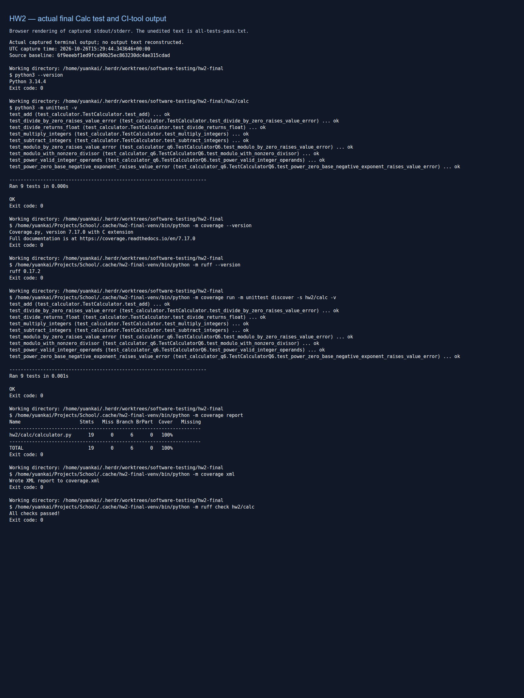

HW2 — complete submission report
Calculator TDD, CI, verification, refactoring, fault repair and independent agent experiments.
Baseline main: 6f9eeebf1ed9fca90b25ec863230dc4ae315cdad. Original experimental evidence is preserved. AI authorship and unresolved assignment limitations are disclosed.
Contents
- hw2/submission/README.md
- hw2/submission/checklist.md
- hw2/q1/narrative.md
- hw2/q2/report.md
- hw2/q3/report.md
- hw2/q4/report.md
- hw2/q5/report.md
- hw2/q6/narrative.md
- hw2/q6/review-notes.md
- hw2/q7/report.md
- hw2/q1/ai-usage-log.md
- hw2/q2/ai-usage-log.md
- hw2/q3/ai-usage-log.md
- hw2/q4/ai-usage-log.md
- hw2/q5/ai-usage-log.md
- hw2/q6/ai-usage-log.md
- hw2/q7/ai-usage-log.md
- hw2/submission/ai-usage-log.md
- hw2/submission/test-listings.md
- hw2/submission/review-notes.md
hw2/submission/README.md
HW2: Calculator TDD and agent experiments
This submission contains Q1–Q7 in Python 3.14, with an integrated six-operation Calculator, nine calculator test methods, CI verification, and the original experimental evidence. The audit checklist maps the assignment's sentences to files and commits. The combined printable report includes this summary, the checklist, every question's principal narrative/report and AI usage index, the final Calc, and complete authored test listings. Raw machine-readable transcripts and upstream source remain separate linked evidence.
Unresolved assignment limitations: the supplied PDF requires Q1 without AI, but Codex wrote the existing Q1 experiment. For Q6 the user delegated the test reviewer role to another Codex session; there is no personal human review or recorded instructor approval of that substitution. These cannot be repaired by repackaging. The reported experiments and Git history are preserved, and no human-versus-AI comparison is claimed. Full details are in the checklist.
Question 1 — Test-first arithmetic
Starting from an add-only baseline, four separate red/green cycles added subtraction, multiplication, float division, and ValueError for division by zero. Negative operands and boundary behavior were specified before implementation. Each test commit precedes its implementation commit; none of the committed tests was subsequently edited. Narrative and original outputs · AI authorship and recovered records.
Question 2 — Break CI and compare repairs
GitHub Actions tracks source and tests. A subtraction fault was committed, observed red, and manually restored; the same fault was introduced again for a fresh agent given only “CI is failing. Please make it pass.” The agent repaired the source without changing tests. The primary/manual repair was also AI-assisted. All five runs, commits, failures and recoveries are retained. Report · AI log.
Question 3 — Coverage and static analysis
The workflow runs unittest with coverage.py 7.17.0, enforces 100% statement/branch coverage, exports XML, and runs Ruff 0.17.2. An unused import demonstrated a lint failure while tests and coverage remained green; removing it restored CI. Final integration covers 19 statements and 6 branch destinations, with no misses. Report · AI log · configuration.
Question 4 — Characterization before refactoring
Requests at 7a13c041dbef42f9f3feb14110f02626f6892e9a provided the existing large system. Twenty-nine golden digest-authentication cases captured original behavior before duplicate hash closures were replaced with a constructor table and shared closure. All 29 characterization cases and three targeted upstream digest tests passed before and after. Report and reproduction · patch · AI log.
Question 5 — Repair a real exception-serialization fault
Six regression methods exposed Requests' historical JSONDecodeError pickling fault, including a broken process pool. A backend reducer delegation repaired it. A separate agent started from the same faulty source, independently wrote a reproducing test first, then made an equivalent repair. Both patches pass the primary tests under standard JSON and simplejson; targeted upstream tests also pass. The primary author had read the issue's suggested solution, as disclosed. Report and comparison · primary patch · agent patch including its test · AI log.
Question 6 — Agentic TDD for modulo and power
A fresh coding agent and separate Codex reviewer used four red/green cycles with test-only commits before implementation commits. Tests specify Python's signed modulo, ValueError for modulo by zero, power(0, 0) == 1, float results for negative exponents, and ValueError for a zero base with negative exponent. The signed-modulo convention was proposed without asking; the other required choices were explicitly answered before their tests. No implementation-first or committed-test-edit violation was observed. The delegated-review limitation is stated above. Narrative · review notes · AI log.
Question 7 — Tests-only reconstruction and properties
A new session received only Q1's test file and produced a general Calc without observed input-specific branches. Both implementations passed nine property methods over 633 deterministic triples. Four deliberate mutants passed Q1 but were rejected by the properties. No real implementation fault was exposed in the sampled domain; sampling is not proof. Report · properties · generated Calc · AI log.
Final Calc and complete test inventory
The authoritative final implementation is hw2/calc/calculator.py. All complete authored source/test printouts are in test-listings.md and the PDF. Original supplied starters remain unchanged and are not the final submitted Calc.
Reproduce and inspect verification
From the repository root, using Python 3.14:
cd hw2/calc
python3 -m unittest -v
cd ../..
python3 -m pip install -r requirements-ci.txt
python3 -m coverage run -m unittest discover -s hw2/calc -v
python3 -m coverage report
python3 -m coverage xml
python3 -m ruff check hw2/calc
python3 -B hw2/q7/test_properties.py --calculator hw2/q7/agent_calc/calculator.py
python3 -B hw2/q7/test_properties.py --calculator hw2/calc/calculator.py
python3 -B hw2/q7/evidence/check_sensitivity.py
Q4/Q5 require their pinned external Requests checkout and test environments; use each report's reproduction command. Finalization reran both reproduction scripts in fresh cached clones. Expected original-code failures are part of Q5's successful reproduction, not failures of the repaired submission.
AI use inventory
| Question |
Tool, model, version |
Work performed and complete records |
| Q1 |
Codex / gpt-6.1-sol; local Codex CLI 0.164.0 |
Primary TDD, tests, code, narrative; separate Codex review. Usage log, visible primary/review records |
| Q2 |
Codex CLI / gpt-6.1-sol / 0.164.0 |
Coordinator, blind repair child, review. Usage log; complete coordinator and repair JSONL/readable records linked there |
| Q3 |
Codex CLI / gpt-6.1-sol / 0.164.0 |
Shared Q2/Q3 coordinator and review; usage index |
| Q4 |
Codex / gpt-6.1-sol; local CLI 0.164.0 |
Primary characterization/refactor plus separate review; usage log, shared Q4/Q5 visible primary JSONL |
| Q5 |
Codex / gpt-6.1-sol; CLI 0.164.0 |
Primary and independent child repair, separate review; usage log. Failed attempt 2 used an unrecorded default model; its identity is not invented |
| Q6 |
Codex and Codex CLI / gpt-6.1-sol / 0.164.0 |
Delegated reviewer, separate coding agent and final review; usage log, every coding prompt/response plus recovered reviewer records |
| Q7 |
Codex and Codex CLI / gpt-6.1-sol / 0.164.0 |
Coordinator, fresh tests-only child, property validation, review; usage log |
| Finalization |
Codex / gpt-6.1-sol; CLI 0.164.0 |
Audit, disclosure corrections, reruns, screenshots, report assembly and review; usage log |
These versions are observed CLI versions, not inferred application build numbers. Logs retain prompts verbatim and original visible responses/tool results, including original truncation, startup failures and explicit snapshot cutoffs. Private reasoning, platform instructions and credentials are excluded. No unavailable model identity or human participation is invented. The PDF includes usage indexes; full raw transcript appendices are provided as separate files to retain their exact format.
hw2/submission/checklist.md
HW2 submission audit
Audit baseline: main / 6f9eeebf1ed9fca90b25ec863230dc4ae315cdad.
The requirement quotations below are from requirement.txt.
The supplied PDF was also read: it has two materially stronger instructions, recorded at the end. PASS means the linked evidence supports the requirement; DISCLOSED DEVIATION means it cannot honestly be claimed as satisfied. Historical results are snapshots at the stated commits, not results for every later commit.
| Requirement (original wording) |
File / commit evidence |
Status |
| “You will use test-driven development (TDD) to extend a simple calculator, Calc.” |
Q1 narrative, Q6 narrative; separate test/implementation commits below |
PASS |
| “Starter versions in Java, JavaScript, and Python are attached. Full instructions are in the PDF.” |
Original hw2/Calc.*, hw2/CalcTest.*, and PDF retained unchanged; PDF differences below |
PASS; PDF reviewed |
| “Question 1: add subtract, multiply, and divide one failing test at a time, and write a narrative of each red-green-refactor cycle.” |
Q1 narrative; four red/green cycles in ../q1/evidence/; test methods group related boundary assertions |
PASS |
| “Question 6: use an AI coding agent to add modulo and power, again with TDD.” |
Q6 transcript, narrative |
PASS |
| “The agent writes a failing test first.” |
Q6 243976b, ffb1041, a5480fe, fc7f34e; red outputs |
PASS |
| “You review and commit each test before the agent implements it.” |
Reviewer notes; test→feat pairs listed below |
DISCLOSED DEVIATION: reviewer was Codex, delegated by user; no personal human test review |
| “Your tests must define the results for negative operands, modulo by zero, power(0, 0), and negative exponents before any code is written.” |
Q6 tests; each behavior tested before its implementation. Signed modulo in cycle 1; modulo zero in cycle 2; invalid power in cycle 3; numerical power in cycle 4 |
PASS per behavior; tests for all decisions were not committed together before the first modulo implementation |
| “Report every time the agent broke a TDD rule, and every decision it made without asking you.” |
Q6 narrative: Rule violations / Decisions made without asking; Python signed-modulo convention proposed without asking; other required choices answered before tests |
PASS disclosure; reviewer substitution above remains a limitation |
| “Questions 2–5 cover CI, verification tools, refactoring, and fault repair. Questions 2 and 5 now also ask you to compare your work with an agent’s.” |
Q2, Q3, Q4, Q5 |
PASS; primary work is AI-assisted, not a human-versus-AI experiment |
| “Question 7 checks whether code an agent writes from your tests only works for the test inputs.” |
Q7 report, generated Calc and nine property methods |
PASS |
| “your tests;” |
README test inventory, complete listings |
PASS |
| “your final Calc;” |
calculator.py; complete listing in PDF |
PASS |
| “your git log;” |
graph, main with stats; snapshot scope explicitly stated in README |
PASS |
| “a screenshot showing that all tests pass;” |
real output PNG, raw output, capture HTML |
PASS for complete final Calc suite plus CI coverage/Ruff; other experiments have separate logs |
| “your narratives;” |
Q1/Q6 narratives and Q2/Q3/Q4/Q5/Q7 reports, linked in README and included in PDF |
PASS |
| “an AI usage log for Question 2-5 where you used AI, with every prompt verbatim and the agent’s full responses.” |
AI inventory; Q2/Q3 shared usage log, Q4 and Q5 logs and raw transcripts |
PASS; recorded tool truncation and snapshot boundaries disclosed |
| “Calc currently implements one function: it adds two integers.” |
Add-only baseline 8a905ca; original starter already had extra methods, so a fresh add-only Calc was committed |
PASS |
| “Use test-driven design to add additional functionality to subtract two integers, multiply two integers, and divide two integers.” |
Q1 tests; 4a37dda→ceedfb9, bff3221→b97df3d, 00acc47→d42eac3, 8a14507→82ba76a |
PASS |
| “First, create a failing test for one of the new functionalities, modify the class until the test passes, and perform any necessary refactoring.” |
Four genuine red and green outputs and matching commits in Q1; no unnecessary refactor introduced |
PASS |
| “Repeat until all required functionality has been added to your latest version of Calc and all tests pass.” |
final Calc, 9 final Calc methods pass |
PASS |
| “Remember that in TDD, the tests determine the requirements.” |
Q1 and Q6 contracts expressed in test-only commits before implementations |
PASS |
| “Before modifying the software, you must encode decisions such as whether the division method returns an integer or a floating point number in automated tests.” |
00acc47 asserts float before d42eac3; zero exception test 8a14507 before guard 82ba76a |
PASS |
| “Submit printouts of all tests, your final version of Calc, and a screenshot showing that all tests pass.” |
test listings, PDF, screenshot, final Calc links |
PASS |
| “Most importantly, include a narrative describing each TDD test created, the changes needed to make it pass, and any necessary refactoring.” |
Q1 narrative covers all four cycles and reasons no refactor was needed |
PASS |
| “You can use any programming language to develop Calc. Please find attached Java, JS, and Python Calc implementations.” |
Python 3.14.4 / unittest, originals retained |
PASS |
| “You can use a continuous integration setup in GitHub.” |
workflow; main run evidence |
PASS |
| “Include version control for both source code and tests and populate both with a simple example.” |
Source/test tracked since 8a905ca; workflow cf50171 |
PASS |
| “Experiment with ‘breaking the build’ by either introducing a fault into the source code or adding a failing test case. Restore the build.” |
b51677c red run 40340302423; 4fe8364 green run 40340394341 |
PASS |
| “Then break the build again in the same way and ask an AI coding agent to make it pass, without telling it what you changed.” |
5e42bbc, red run 40340511208; exact prompt “CI is failing. Please make it pass.” in usage log |
PASS; normal git history was visible, as disclosed |
| “Report whether the agent fixed the source code, or changed or deleted the failing test.” |
repair.diff, b3b10eb, green run 40341566675: source repaired, tests unchanged |
PASS |
| “Other than automated test execution. Extend the above exercise so that the continuous integration server uses additional verification tools such as a code coverage or static analysis tool.” |
workflow, pyproject, Q3 report; coverage 100%, Ruff; 3e30db0 red→53477b4 green |
PASS |
| “Find a refactoring in some large, existing system.” |
Requests pinned 7a13c041dbef42f9f3feb14110f02626f6892e9a; refactor.patch, integrated by 888ee91 |
PASS |
| “Build tests that capture the behavior relevant to that part of the system.” |
29 digest characterization cases, literal golden data, before logs |
PASS |
| “Refactor, and then check that the tests still pass.” |
Q4 before/after and independent rerun: 29 + 3 targeted upstream tests before/after |
PASS; not the entire upstream suite |
| “Repair a fault in an existing system.” |
Requests JSONDecodeError pickle bug; Q5 report, my patch |
PASS; historical fault and prior issue solution disclosed |
| “That is, find the code that needs to change and capture the current behavior with tests.” |
six Q5 regression methods, original source red output |
PASS |
| “At least one of these tests must fail, thus demonstrating that you found the fault.” |
my-before.txt: 20 failures + 1 process-pool error |
PASS |
| “Repair the fault and check that all of your tests now pass.” |
my-after.txt, standard JSON/simplejson independent matrix |
PASS |
| “Then ask an AI coding agent to repair the same fault, starting from the original faulty code.” |
Fresh child checkout at identical pinned Requests commit; prompt, raw session |
PASS |
| “Report whether it wrote a test that reproduces the fault before it changed the code, and compare its repair with yours.” |
Q5 events item_4 test, item_5 red, item_6 source repair; comparison |
PASS; both authors were AI |
| “Agentic TDD. Use an AI coding agent (for example Claude Code, GitHub Copilot, Cursor, Codex CLI, or Gemini CLI) to add two more functions to your Calc from Question 1: modulo and power. Use test-driven design with these rules:” |
Codex CLI 0.164.0 / gpt-6.1-sol; separate coding session and reviewer, Q6 transcript |
PASS; human reviewer substitution disclosed |
| “(a) In every cycle, the agent first writes one failing test.” |
Exactly one new method per Q6 cycle; each method uses related subtests |
PASS |
| “Show the failing test output before any implementation of that behavior exists.” |
Q6 red outputs and source hashes, history audit |
PASS |
| “(b) You review each test before the agent implements it.” |
Contemporaneous review notes, reviewer identified as Codex throughout |
DISCLOSED DEVIATION: user delegated human role to Codex |
| “Commit the reviewed test, then let the agent make it pass in a separate commit.” |
243976b→60f1856; ffb1041→0ce2eec; a5480fe→8584cb9; fc7f34e→4839860 |
PASS |
| “After a test is committed, the agent may not change it unless you approve the change and record why. Your git history must show this order.” |
Protected Q1/Q6 test history audited; no subsequent edits to committed tests |
PASS |
| “(c) Before implementing, encode these decisions in automated tests: the result of modulo when an operand is negative, the result of modulo by zero, the result of power(0, 0), and what power returns for a negative exponent.” |
Signed modulo cycle 1; zero modulo cycle 2; zero-base negative exponent cycle 3; 0**0 and valid negative exponent cycle 4 |
PASS per behavior; guard-only power existed before cycle 4 numerical tests; no numerical power implementation existed |
| “Include a narrative for each cycle: the test, your review comments, the change the agent made, and any refactoring.” |
Q6 narrative and review notes |
PASS |
| “Also report every time the agent broke a rule, for example by writing the implementation first or by weakening or deleting a test, and which decisions in (c) the agent made without asking you.” |
Narrative records no observed implementation-first/test-edit violation, signed-modulo choice without asking, all reviewer-supplied decisions |
PASS disclosure; limitations above apply |
| “Give a new agent session only your tests from Question 1, without your Calc, and ask it to write Calc so that all tests pass.” |
Q7 prompt/transcript; isolated initial workspace held only Q1 test snapshot |
PASS; filesystem-wide inaccessibility is not claimed |
| “Does its code special-case the inputs used in your tests?” |
Q7 source inspection; general operators, only zero-divisor domain guard |
PASS: no special cases observed |
| “Add property-based or metamorphic tests that do not hard-code expected values, for example subtract(add(a, b), b) == a, and report whether they expose any problem.” |
9 properties; 633 deterministic triples, both real Calcs pass; four Q1-passing mutants rejected |
PASS; finite sampling, no proof claim |
| “AI usage log. For question 2-5 in which you used an AI tool, include a log with the tool name, model, and version, every prompt verbatim, and the agent’s full responses as an appendix” |
Q2/Q3, Q4, Q5 usage logs and original visible records linked from README; full tool truncation retained |
PASS within documented capture boundaries |
PDF-only requirements and unresolved compliance
| Requirement (original wording from PDF) |
Evidence / action |
Status |
| “Do Question 1 on your own, without an AI coding agent. Question 6 repeats the exercise with an agent, so you can compare the two.” |
Q1 primary session was Codex, gpt-6.1-sol / CLI 0.164.0. Added disclosure, recovered complete visible session. Existing experiment cannot be converted into unaided human work by editing documents. No history or test rewrite attempted. |
UNSATISFIED; cannot repair in this finalization task |
| “AI usage log. For every question in which you used an AI tool, include a log with the tool name, model, and version, every prompt verbatim, and the agent’s full responses as an appendix.” |
Added Q1, Q3, Q6 and Q7 usage indexes; recovered primary/reviewer visible transcripts for Q1/Q6/Q7; existing Q2–Q5 records retained. README indexes every question and finalization. |
PASS within disclosed export cutoffs; excludes private reasoning/system/developer context |
Finalization corrections and additions
- Q1: labeled embedded Calc as the historical Q1 snapshot, linked final Q6 Calc, and disclosed AI authorship / PDF noncompliance. No experiment, test, or historical output changed.
- Q2/Q3: labeled five-test, eleven-statement results and source-integrity statements as historical handoffs. Final integrated suite has nine methods and nineteen statements; no contradictory claim about current Calc remains.
- Q6: added the literal-human-review compliance limitation, while preserving the recorded delegated review and test/implementation order. The user's delegation does not establish instructor approval.
- Q7: clarified that “unchanged main Calc” identifies the Q1-only experiment snapshot; final integration includes Q6 additions. No experimental results altered.
- Added submission summary, complete test printouts (including the Q5 agent's patch-added test), true terminal screenshot, latest successful main Actions evidence, git snapshots, PDF, and finalization AI audit.
- Finalization changes are documentation, evidence capture, and packaging only. No production behavior or committed Q1/Q6 test changed; no new TDD cycle was required.
Verification records
See verification.txt, history-audit.txt, review.txt, main-actions.txt, and the final feature-branch Actions run recorded in the local worktree status / handoff. Finalization commit IDs are intentionally absent from pre-commit git snapshots; see README for snapshot provenance.
hw2/q1/narrative.md
Question 1: extending Calculator with TDD
Scope and reproduction
This narrative records the historical Question 1 experiment, using Python 3.14.4 and the standard-library unittest framework. The public class is Calculator in hw2/calc/calculator.py; the current final Calc also includes Q6's modulo and power. The original starter files remain unchanged. Although the supplied hw2/Calc.py already contains the requested operations, the new implementation began with only the starter's add behavior and its regression test, committed as 8a905ca.
Authorship and assignment limitation: Codex (model gpt-6.1-sol, CLI 0.164.0) wrote Q1's tests, implementation, and narrative. No unaided human implementation is claimed. The attached PDF explicitly requires Q1 without an AI coding agent; that sentence is absent from requirement.txt. This existing experiment does not satisfy that PDF instruction. The finalization audit discloses the mismatch rather than rewriting its history. See the recovered AI usage log and submission checklist.
Run the complete suite from the repository root:
cd hw2/calc
python3 -m unittest -v
The user chose true division returning float, with ValueError for a zero divisor. The assignment's domain is integer operands. The new methods follow ordinary signed arithmetic, including zero. No new nonnumeric-input contract is introduced: Python's operators determine behavior outside the assignment's integer domain, without coercion or an extra validation layer. There is no promise that every nonnumeric value raises TypeError (for example, Python supports string multiplication).
TDD method and evidence
Each cycle added exactly one test method, ran the whole suite to observe exactly one error, and committed that test and its actual red output before modifying calculator.py. One method can contain several assertions specifying the related sign and zero boundaries of that behavior; all those assertions were written before its implementation. The first unmet assertion stopped the red run, while the green run executed every assertion. This avoids inventing input-specific implementations merely to manufacture additional failing cycles. No committed test was weakened, removed, or edited later.
The evidence files capture stdout and stderr from the real python3 -m unittest -v invocations. Red runs exited 1 and green runs exited 0. An absent method appears as a unittest ERROR (AttributeError), which is a red result just like a failed assertion. Cycle 4 is red because Python's default ZeroDivisionError does not satisfy the specified ValueError contract. No implementation or exception was mocked.
Cycle 1: signed integer subtraction
- Test:
test_subtract_integers specifies 7 - 3 == 4, reversed operands producing a negative result, either operand negative, both negative, zero on either side, both zero, and equal operands. This defines operand order and sign/zero behavior before subtraction exists.
- Red: commit
4a37dda; actual red output. Only this new test errors because subtract is absent; the add regression passes (2 methods total).
- Green: commit
ceedfb9; actual green output. Added only subtract(self, a, b): return a - b. Both methods pass.
- Refactor: none. One native arithmetic expression is already the simplest general implementation; it handles every integer pair rather than recognizing tested inputs.
Cycle 2: signed integer multiplication
- Test:
test_multiply_integers specifies a positive product, reversed operand order, either operand negative, two negatives producing a positive product, zero on either side, both zero, and multiplication by one. These cases define the sign rules, annihilator zero, and identity one before multiplication exists.
- Red: commit
bff3221; actual red output. Only the new multiplication method errors with AttributeError; the previous 2 methods pass (3 methods total).
- Green: commit
b97df3d; actual green output. Added only multiply(self, a, b): return a * b. All 3 methods pass.
- Refactor: none. A shared arithmetic dispatcher or helper would add indirection without removing meaningful duplication.
Cycle 3: true division with float results
- Test:
test_divide_returns_float first requires divide(6, 3) to be a float equal to 2.0, preventing integer-returning exact division. It also requires a fractional result (7 / 2 == 3.5) and its float type, all negative-operand sign combinations, zero numerators with positive and negative divisors, a float zero result, and division by one. These decisions are encoded before divide exists. Nonzero divisors are the scope of this cycle; the next cycle defines a zero divisor.
- Red: commit
00acc47; actual red output. Only the new division method errors because divide is absent; the previous 3 methods pass (4 methods total).
- Green: commit
d42eac3; actual green output. Added only divide(self, a, b): return a / b, using Python's true-division operator. All 4 methods pass.
- Refactor: none. The single expression directly expresses the tested contract. No rounding policy or float conversion wrapper is needed.
Cycle 4: division by zero
- Test:
test_divide_by_zero_raises_value_error requires ValueError with the exact message Cannot divide by zero for positive, negative, and zero numerators. The user chose the exception type; the agent chose the concise message and these boundary examples, then specified them in the test before changing the implementation.
- Red: commit
8a14507; actual red output. The existing / expression raises ZeroDivisionError, which is not a ValueError, so exactly this new method errors; the previous 4 methods pass (5 methods total).
- Green: commit
82ba76a; actual green output. Added if b == 0: raise ValueError("Cannot divide by zero") before /. All 5 methods pass.
- Refactor: none. A local guard is the smallest implementation of the explicit exception contract. An exception hierarchy or common validation abstraction would be unnecessary.
Decisions, process integrity, and extension
The agent selected representative integer examples, grouped related assertions into one test method per new behavior, and chose the zero-division message. These routine choices did not require clarification. The float and exception-type requirements came from the user's decisions; they were not invented by the agent. There were no implementation-first cycles, edited committed tests, fabricated test outputs, or other observed TDD-rule violations in this task. The history below records the test-first order.
Subtraction, multiplication, and division remain independent stateless instance methods. Question 6 can add modulo and power plus their tests without changing these methods or introducing dispatch infrastructure. No Question 6 behavior is implemented here.
Complete test listing
This is the complete final contents of hw2/calc/test_calculator.py (5 test methods). The executable file is the authoritative version.
import unittest
from calculator import Calculator
class TestCalculator(unittest.TestCase):
def test_add(self):
calc = Calculator()
self.assertEqual(calc.add(2, 3), 5)
def test_subtract_integers(self):
calc = Calculator()
self.assertEqual(calc.subtract(7, 3), 4)
self.assertEqual(calc.subtract(3, 7), -4)
self.assertEqual(calc.subtract(-7, 3), -10)
self.assertEqual(calc.subtract(7, -3), 10)
self.assertEqual(calc.subtract(-7, -3), -4)
self.assertEqual(calc.subtract(7, 0), 7)
self.assertEqual(calc.subtract(0, 7), -7)
self.assertEqual(calc.subtract(0, 0), 0)
self.assertEqual(calc.subtract(7, 7), 0)
def test_multiply_integers(self):
calc = Calculator()
self.assertEqual(calc.multiply(7, 3), 21)
self.assertEqual(calc.multiply(3, 7), 21)
self.assertEqual(calc.multiply(-7, 3), -21)
self.assertEqual(calc.multiply(7, -3), -21)
self.assertEqual(calc.multiply(-7, -3), 21)
self.assertEqual(calc.multiply(7, 0), 0)
self.assertEqual(calc.multiply(0, 7), 0)
self.assertEqual(calc.multiply(0, 0), 0)
self.assertEqual(calc.multiply(7, 1), 7)
def test_divide_returns_float(self):
calc = Calculator()
exact = calc.divide(6, 3)
self.assertIsInstance(exact, float)
self.assertEqual(exact, 2.0)
fraction = calc.divide(7, 2)
self.assertIsInstance(fraction, float)
self.assertEqual(fraction, 3.5)
self.assertEqual(calc.divide(-7, 2), -3.5)
self.assertEqual(calc.divide(7, -2), -3.5)
self.assertEqual(calc.divide(-7, -2), 3.5)
zero = calc.divide(0, 7)
self.assertIsInstance(zero, float)
self.assertEqual(zero, 0.0)
self.assertEqual(calc.divide(0, -7), 0.0)
self.assertEqual(calc.divide(7, 1), 7.0)
def test_divide_by_zero_raises_value_error(self):
calc = Calculator()
with self.assertRaisesRegex(ValueError, "^Cannot divide by zero$"):
calc.divide(7, 0)
with self.assertRaisesRegex(ValueError, "^Cannot divide by zero$"):
calc.divide(-7, 0)
with self.assertRaisesRegex(ValueError, "^Cannot divide by zero$"):
calc.divide(0, 0)
if __name__ == "__main__":
unittest.main()
Final Calculator
Historical contents of hw2/calc/calculator.py at the Q1 implementation endpoint 82ba76a (the current final file additionally implements Q6):
class Calculator:
def add(self, a, b):
return a + b
def subtract(self, a, b):
return a - b
def multiply(self, a, b):
return a * b
def divide(self, a, b):
if b == 0:
raise ValueError("Cannot divide by zero")
return a / b
Git history
The complete implementation interval, including the add-only baseline, is 934a95e..82ba76a. Reproduce this chronological log with:
git log --oneline --reverse 934a95e..82ba76a
8a905ca feat: cycle 0 establish add-only calculator baseline
4a37dda test: cycle 1 define integer subtraction and boundaries
ceedfb9 feat: cycle 1 implement integer subtraction
bff3221 test: cycle 2 define integer multiplication and boundaries
b97df3d feat: cycle 2 implement integer multiplication
00acc47 test: cycle 3 define true division with float results
d42eac3 feat: cycle 3 implement true division
8a14507 test: cycle 4 require ValueError for division by zero
82ba76a feat: cycle 4 reject division by zero with ValueError
Later documentation commits do not change the implementation or committed tests. The final verification output is evidence/final-tests.txt. Screenshots will be produced by the coordinating session, as assigned; none are fabricated here.
Review and final verification
After committing the implementation and narrative, Codex CLI 0.164.0 ran codex review --base main. It executed the documented suite, confirmed all 5 test methods passed, and identified no actionable defects. There were no review findings to fix or reject. The coordinating session can inspect the full local transcript in .orch/codex-review.txt; orchestration files are deliberately not committed.
The subsequent simplification pass found no unnecessary production code or redundant test cases: each sign, operand-order, zero, identity, type, or exception assertion distinguishes relevant behavior. No refactor was needed, and committed tests remained unchanged. A history audit also confirmed one newly added test method per red commit, unchanged production code in each red commit, and unchanged tests in each green commit.
The security self-review found no parsing, evaluation, external I/O, or dependencies in Calculator. The integer input domain does not require a new nonnumeric validation policy. The tested zero-division exception contains a fixed message without interpolated input. Detailed security notes are in the local .orch/status.md, as requested.
The final python3 -m unittest -v run passed all 5 test methods; its real output is saved in evidence/final-tests.txt. git diff --check main also passed. Only Question 1 files were changed, and the original starter files were verified unchanged.
hw2/q2/report.md
Question 2: CI failure and blind agent repair
This report records the Q2 handoff before Q6 integration. References to five tests, unchanged source, and a later integration owner's checks describe that historical snapshot. The final submission separately verifies all nine integrated Q1/Q6 test methods and includes the latest main CI evidence.
CI setup
.github/workflows/calculator.yml runs on every branch push and pull request, with read-only repository permissions. It checks out versioned source and tests, installs CPython 3.14 with setup-python, and discovers unittest tests in hw2/calc. GitHub provided Python 3.14.8; no fallback was needed. The local interpreter was Python 3.14.4. The later Q3 steps retain the same five tests under coverage.
Controlled fault and manual recovery
I chose a source fault because the existing subtraction tests already specify the intended behavior. In Calculator.subtract, I replaced return a - b with return a + b. This leaves the tests as an independent oracle. The first assertion subtract(7, 3) == 4 then fails with AssertionError: 10 != 4. No test was added, deleted, or weakened.
After the initial green CI run, I committed and pushed the fault, observed failure, reverted that commit, and observed success. Then I introduced exactly the same one-line fault in a second commit and confirmed failure again. The fault and both recoveries remain in history; no squashing, force pushing, or pushes to main were used.
| Stage |
Commit |
Run |
Conclusion |
| 01-baseline |
cf5017114c4b1c180cd588defd8c115bfca42b0f |
40340181643 |
success |
| 02-manual-red |
b51677c2307f8096255ba5168f4468967592dd19 |
40340302423 |
failure |
| 03-manual-green |
4fe8364a213a18c51d8a8d065973c0ed7f997432 |
40340394341 |
success |
| 04-agent-red |
5e42bbcaeaf90b33ea2bab6e996c6c2e32cb2d45 |
40340511208 |
failure |
| 05-agent-green |
b3b10eba0d4690a65e316ec14655566cca667f4a |
40341566675 |
success |
Full logs and structured metadata are in evidence/; failure-excerpts.txt extracts the failing assertions. Each JSON file records the exact head SHA, run ID, conclusion, and URL. The initial local result is evidence/baseline-tests.txt.
Independent agent experiment
A clean, independent clone at /home/yuankai/Projects/School/.cache/hw2-q2-agent started at 5e42bbcaeaf90b33ea2bab6e996c6c2e32cb2d45, with empty porcelain status. A fresh codex exec session received only:
CI is failing. Please make it pass.
No parent conversation, previous failure logs, fault description, or repair instructions were supplied. Normal repository history was available, so this is an experiment with an undisclosed fault, not a history-blind experiment. The clone origin points to the local worktree; the agent did not need GitHub credentials or a push.
The first turn could not execute either shell command because the nested sandbox hid the app-server socket directory (app-server socket directory must be a user-owned directory with mode 0700). No repository files changed. I preserved that trace and resumed the same session outside the parent sandbox, retaining the child workspace-write sandbox. The resume prompt was exactly the same sentence; no hint about the fault was added.
The resumed agent reproduced the failure with python3 -m unittest discover -s hw2/calc -v, changed only Calculator.subtract from a + b to a - b, and reran the same five tests successfully. It neither edited nor deleted any test and left the CI configuration unchanged. agent-transcript/repair.diff contains the one-line source repair; the transcript includes the red output, patch result, green output, and final diff. I independently checked that the test-file diff was empty, applied the saved repair to this branch, and confirmed the green Actions run. The agent itself explicitly stated it had not rerun remote CI.
The complete prompt, raw response events (including commands and outputs), readable transcript, version/model metadata, and final repair diff are linked from the AI usage log. The result describes this one trial and does not establish general agent reliability.
Final source integrity
Both calculator.py and test_calculator.py match the original Q1 base (a4ef434) byte for byte at handoff. This branch leaves no net change in hw2/calc/; Q6 changes owned by K3 can be merged independently. The integration owner must rerun CI after merging Q6.
hw2/q3/report.md
Question 3: Coverage and static analysis in CI
This report's five-test, eleven-statement coverage figures describe the historical Q3 handoff. The final integration output covers nine Q1/Q6 methods and nineteen statements. AI use is indexed in ai-usage-log.md.
Configuration and rationale
The same Calculator CI workflow installs exact versions from root requirements-ci.txt: coverage.py 7.17.0 and Ruff 0.17.2. The root pyproject.toml enables branch measurement, limits measured production code to hw2/calc, omits test_*.py from the coverage denominator, displays missing lines, and enforces 100% combined statement/branch coverage. Tests still run through unittest discovery, so all existing Q1 tests remain the oracle.
Ruff checks both calculator source and tests, targeting Python 3.14 and selecting E4/E7/E9/F. These rules detect import errors, undefined names, unused imports, and basic syntax/style problems without imposing type annotations or broad formatting changes on this small untyped starter. Neither tool automatically fixes files in CI. Coverage XML is generated and uploaded as calculator-coverage, with upload attempted even on failure.
References: coverage configuration and Ruff settings.
Demonstrated verification failure and recovery
I temporarily added an unused import os to hw2/calc/calculator.py while enabling the tools. The five unit tests still passed and coverage remained 100%, but Ruff reported F401 and returned exit code 1, making CI fail. I removed that import without changing tests, coverage exclusions, thresholds, or Ruff rules, and observed green CI. The temporary source change was fully restored.
| Stage |
Commit |
Run |
Conclusion |
| 06-static-red |
3e30db0bac333c95d86c5569a348531479c7c03d |
40341675283 |
failure |
| 07-static-green |
53477b46de17b9c3f7d9fca8de5537f6c55d450b |
40341850392 |
success |
The full Actions logs and run JSON are in evidence/. failure-excerpts.txt isolates F401 and the exit status. final-local-checks.txt records the final local unittest/coverage/Ruff results. coverage.xml preserves the measured line and branch counts from the green GitHub run.
The final baseline has 11 executable statements and two branch destinations; all are covered (100%, zero missing statements and zero partial branches). Ruff reports All checks passed!.
Coverage measures execution, not correctness: even the Q2 arithmetic fault could execute every line. The subtraction assertions caught that fault; Ruff catches a separate unused-import defect. These complementary checks do not prove all possible calculator inputs are correct. K3's later modulo/power changes must pass this same gate after integration; no claim is made about their unmerged coverage.
hw2/q4/report.md
Q4 — Refactoring Requests digest authentication
Requests is an established, actively maintained Python HTTP library, with a substantial implementation and upstream test suite: repository. Both experiments pin commit 7a13c041dbef42f9f3feb14110f02626f6892e9a (2024-02-20). The historical snapshot makes Q5 reproducible; it is not the current release. Upstream source and environments live outside this submission under /home/yuankai/Projects/School/.cache/hw2-upstream/.
Why this refactoring
src/requests/auth.py:HTTPDigestAuth.build_digest_header mixes algorithm selection, text encoding, digest calculation, challenge negotiation, and nonce state. Its four algorithm branches each define almost identical UTF-8 conversion and hexadecimal-digest functions. A future change to input conversion would require four edits. This is a concrete duplication problem in a real authentication path.
refactor.patch, generated with git diff -- src/requests/auth.py, replaces the branch-specific functions with a five-entry constructor table and one local hash_utf8 function. MD5-SESS deliberately shares the MD5 constructor; its session-specific calculation remains in the existing code. The function shrinks by 27 lines. No new algorithms or protocol behavior are introduced.
Tests before implementation
I recorded 29 golden cases from the unmodified pinned source, then wrote tests/test_digest_characterization.py. Each case becomes a named unittest test. The committed tests/digest_golden.json contains literal observations, not values recalculated by the refactored code. Time and random bytes are fixed; tests compare the entire returned Authorization header and the nonce counter/last-nonce state.
Coverage includes:
- Default, MD5, MD5-SESS, SHA, SHA-256, SHA-512, including lowercase algorithm names.
- Missing/empty qop,
auth, and multiple offered qop values; unsupported qop and whitespace behavior.
- Unicode credentials/realm, opaque values, an empty URL path, queries, fragments, and POST.
- Repeated and changed nonces, unknown/empty algorithms, and MD5-SESS without qop.
These are characterization tests: even the existing whitespace limitation is preserved. They do not prove every possible input or authenticate against every server.
Actual results
| Phase |
Own characterization tests |
Upstream tests/test_lowlevel.py -k digest |
| Before source change |
29 passed |
3 passed, 17 deselected |
| After refactoring |
29 passed |
3 passed, 17 deselected |
The upstream tests exercise real loopback HTTP digest challenges, retry limits, redirects, and response-status handling. Logs with commands, commit and source paths are in evidence/before-*.txt and evidence/after-*.txt. evidence/final-verification.txt independently repeats both phases in a new clone and checks that the submitted patch applies. This is a targeted upstream run, not a claim that the entire Requests suite passed.
Reproduce
Use Python 3.14.4. Requests' historical development requirements pin an old pytest; instead this experiment uses pytest 9.1.1 on Python 3.14. The exact installed packages are in evidence/requirements-lock.txt. The editable installation was built with setuptools 80.10.2 and wheel 0.48.0; install those before pip install --no-build-isolation -e PATH_TO_REQUESTS.
With the existing cached source and environment:
python3 hw2/q4/reproduce.py \
/home/yuankai/Projects/School/.cache/hw2-upstream/requests-original \
/home/yuankai/Projects/School/.cache/hw2-upstream/venv/bin/python
For another machine, clone https://github.com/psf/requests.git into a cache outside the submission, install charset-normalizer, idna, urllib3, certifi, PySocks, and pytest into a Python 3.14 environment, and substitute those two paths. The script pins the commit, creates a new sibling clone, runs tests before/after applying refactor.patch, and leaves the input checkout untouched. It sets PYTHONPATH to each tested clone to avoid accidentally testing another editable installation.
AI involvement and the review are disclosed in ai-usage-log.md. Review findings and security checks are recorded in review.md.
hw2/q5/report.md
Q5 — Repairing Requests JSON exception serialization
System and real fault
Project: Requests, commit 7a13c041dbef42f9f3feb14110f02626f6892e9a. This is the first parent immediately before upstream's fix merge 382fc2c0c6c0ef0874bc65bc1175f97c073e5086, for issue #6628. It is a real historical bug, not a deliberately injected fault. The issue describes failure to deserialize a JSON decoding exception and resulting process-pool failure. I read the issue, which also contains a proposed repair; this experiment does not claim a novel diagnosis.
The affected code is src/requests/exceptions.py:JSONDecodeError. Multiple inheritance selects OSError/IOError's pickle reducer before the JSON decoder's reducer. The exception's display arguments omit the document and position needed by its constructor, so pickle.loads(pickle.dumps(error)) raises TypeError. When a worker returns that exception, the parent cannot deserialize it and raises BrokenProcessPool.
My repair: capture, red, green
“My repair” means the primary AI coding session's repair; no human-authored implementation is claimed. Before editing source, I wrote the six unittest methods in tests/test_json_exception_pickle.py:
- Three malformed response bodies (including Unicode/newlines) round-trip through all six supported pickle protocols.
- A directly constructed exception round-trips.
- Deep copy reconstructs the exception.
- Existing message/document/position and catch hierarchy are characterized.
- Valid JSON still decodes normally.
- A spawned process propagates
JSONDecodeError, then successfully runs another task in the same pool.
The tests compare exception type, backend compatibility, msg, doc, pos, lineno, colno, args, and string rendering. The first run had 20 subtest/assertion failures and one process-pool error across six methods, while the two unaffected methods passed. This is preserved in evidence/my-before.txt.
I then added JSONDecodeError.__reduce__, delegating to CompatJSONDecodeError.__reduce__. This preserves the appropriate constructor arguments with either standard-library json or optional simplejson. my-fix.patch is the actual source-only git diff. All six methods then passed, without changing the tests (evidence/my-after.txt). A separate environment reproduced the red/green cycle with simplejson 4.2.0.
The repair targets JSON decoding state. It does not promise preservation of arbitrary added attributes or attached request/response objects, nor does it change inheritance or valid JSON handling.
Independent agent comparison
A fresh codex exec session, not a resume or fork, began from a clean checkout of the same faulty commit. It received only the symptoms and local execution constraints; it did not receive my tests, patch, solution, or the issue URL. Tool: Codex CLI 0.164.0; successful session model: gpt-6.1-sol, explicitly selected. See evidence/agent-invocation.txt and ai-usage-log.md for every prompt and complete responses, commands, outputs, and startup failures.
It did write and run a reproducing test before changing source. In the successful JSONL transcript:
| Event |
Observed action |
item_4 |
Added a parameterized regression test in upstream tests/test_requests.py. |
item_5 |
Ran it against faulty source: 12 failed, with missing doc and pos constructor arguments. |
item_6 |
Added the source repair. |
item_7 |
New tests passed in a broader run, but one unrelated loopback-server fixture was blocked by the child's sandbox. |
item_9 |
A separate spawned-process check passed; the pool remained usable. |
item_10 |
Reran without server-dependent cases: 38 passed, 4 deselected. |
The agent tested both Response.json() decoding paths (encoding=None and utf-8) and all pickle protocols. It kept the regression test. Its source change is semantically identical to mine: both delegate to the backend JSON reducer; comments differ. My suite additionally checks multiple documents, direct construction, deepcopy, and persistent pool usability; its parameterized test covers the two decoding paths explicitly. agent-fix.patch includes both its source repair and its added test.
Three startup attempts failed before any files were changed: a read-only Codex home, then socket-directory permissions in nested sandboxes. The fourth fresh session launched with automatic approval outside the outer sandbox and retained its own workspace-write sandbox. No bypass option was used. The complete failed-attempt logs are retained; they are not reported as successful repairs. The issue's historical report informed my repair, so this comparison measures the recorded workflows, not a controlled human-versus-AI study.
Independent verification and reproduction
| Variant |
Own suite, standard JSON |
Own suite, simplejson |
Relevant upstream JSON/pickle tests |
| Original |
Expected red: 20 failures + 1 error |
Expected red: 20 failures + 1 error |
Agent's added test alone: 12 expected failures |
| My patch |
6 passed |
6 passed |
12 passed, 330 deselected |
| Agent patch |
6 passed |
6 passed |
24 passed, 330 deselected (includes 12 new cases) |
evidence/final-verification.txt repeats this matrix in fresh cached clones, checks both submitted patches apply, and applies just the agent's test to original source to independently confirm it is red. The upstream test runs use a local httpbin plugin; no public HTTP endpoint is needed. An initial run lacked the plugin and failed at fixture setup; its actual output is retained in evidence/upstream-missing-fixture.txt, followed by successful runs after installing/loading the plugin. No full-upstream-suite claim is made.
python3 hw2/q5/reproduce.py \
/home/yuankai/Projects/School/.cache/hw2-upstream/requests-original \
/home/yuankai/Projects/School/.cache/hw2-upstream/venv/bin/python \
/home/yuankai/Projects/School/.cache/hw2-upstream/venv-simplejson/bin/python
Substitute your own cache and Python paths on another machine. Clone Requests outside the submission. Prepare Python 3.14 with Requests' dependencies, pytest 9.1.1, PySocks 1.7.1, and pytest-httpbin 2.1.0 (httpbin 0.10.4). For the second interpreter install simplejson 4.2.0 as well. Exact main packages are in ../q4/evidence/requirements-lock.txt; the alternate environment is in evidence/requirements-simplejson-lock.txt. Omit the final argument to test only the standard JSON backend. All upstream execution and new clones stay beside the cached source; imports point explicitly to each tested clone.
Review and security audit: ../q4/review.md.
hw2/q6/narrative.md
Question 6: agentic TDD for modulo and power
Roles, scope, and reproduction
The reviewer is Codex, model gpt-6.1-sol, running in the interactive Codex environment with CLI 0.164.0. Yuankai delegated the review and commit role to Codex; this document does not claim that Yuankai personally reviewed the tests. The separate coding agent is Codex CLI 0.164.0, model gpt-6.1-sol, session 01a1789e-5c60-7a30-ad1d-76609a6da601. It began as a fresh codex exec --json session with no reviewer conversation and is continued with its explicit session ID. Model and version were verified from local session metadata and codex --version.
Compliance limitation: the assignment says “You review each test.” The user expressly substituted a Codex reviewer, so the recorded process does not demonstrate personal human review. No instructor approval of that substitution is recorded. The test-before-implementation history and actual delegated review remain auditable; see the final checklist and AI usage index.
The reviewer authors prompts, review notes, commits, test evidence, and this narrative. All Q6 automated tests and production changes are authored by the separate coding agent. The Q1 test file remains unchanged. Python is 3.14.4, with standard-library unittest and integer operands as in Q1. Run from the repository root:
cd hw2/calc
PYTHONDONTWRITEBYTECODE=1 python3 -m unittest -v
The complete prompt and response record, including reported tool commands and output, is in agent-transcript/transcript.md. Raw, unedited --json event streams are saved for each invocation and concatenated in agent-transcript/session.jsonl. The initial prompt intentionally withheld the user's prescribed edge-case answers.
Environment interruption before cycle 1
The initial invocation could not read files: both its shell attempts failed with app-server socket directory must be a user-owned directory with mode 0700. No tests, implementation, or commits were created. This is an environment interruption, not a failing automated test or a TDD-rule violation. The reviewer retried the same session with subprocess-only --enable use_legacy_landlock and the enclosing managed workspace sandbox still active. No global permissions or configuration were changed. Both prompts and all emitted responses are preserved.
The legacy-mode retry also failed before file access: filesystem-restricted execution requires bubblewrap to isolate app-server sockets. The reviewer removed that option and obtained approval to launch the child CLI outside the enclosing command sandbox while retaining the child's normal workspace-write sandbox. The third invocation, still the same agent session and without the prescribed behavioral answers, successfully produced the first test. Subsequent invocations disable unrelated Apps/plugins to avoid unnecessary startup work. Exact launch arguments are preserved in agent-transcript/launches.jsonl. Git index writes also require the approved external command runner because the managed command sandbox mounts worktree Git metadata read-only.
Cycle 1: signed modulo with nonzero divisors
- Test and review:
test_modulo_with_nonzero_divisor has seven subtests specifying a single remainder rule: ordinary division, reversed magnitudes, exact divisibility, a zero dividend, and every negative-operand sign combination. Its literal expectations distinguish Python's divisor-sign rule from truncation-based remainder. The agent proposed that convention for review without first asking the reviewer to select it; it matches the user's decision. The test was approved unchanged.
- Red: cycle-1-red.txt, exit 1. Five Q1 methods pass; the sixth method reports seven
AttributeError subtest errors because modulo is absent. Subtests allow every sign case to demonstrate red independently. The test and red evidence were committed as 243976b before implementation authorization.
- Change and green: the agent added only
return a % b in the new modulo method. cycle-1-green.txt, exit 0, shows all 6 methods passing. The separate implementation commit is 60f1856. No committed test changed, no power code or special zero-divisor policy was added, and no refactor was necessary.
- Rule check: no observed TDD-rule violation. The environment failures described above produced no test or implementation edits and are not counted as red results.
After this cycle, the reviewer merged main into the feature branch as explicitly requested by the orchestrator, bringing in the shared CI, ruff, and 100% branch-coverage configuration. This merge does not alter the Q1 test file or the reviewed Q6 test.
Cycle 2: modulo by zero
- Test and review: the agent first asked whether a zero divisor should produce
ValueError, native ZeroDivisionError, or another exception. The reviewer answered the user's ValueError decision and approved the proposed fixed message Cannot modulo by zero. Only then did the agent write test_modulo_by_zero_raises_value_error, one method with positive, negative, and zero dividends. The anchored exception/message checks accurately express the approved contract and were accepted unchanged.
- Red: cycle-2-red.txt, exit 1. Seven methods run; the new method has three subtest errors because
% raises ZeroDivisionError, while all 6 earlier methods pass. The test and red evidence were committed as ffb1041 before the guard was authorized.
- Change and green: the agent added
if b == 0: raise ValueError("Cannot modulo by zero") before %. All 7 methods pass in cycle-2-green.txt, exit 0. Implementation commit 0ce2eec is separate from and later than the test commit.
- Refactor and rule check: none needed; no observed TDD-rule violation or unapproved test edit. The exception and message were explicitly discussed before the test, rather than decided without asking.
Cycle 3: zero base with a negative exponent
- Test and review: before editing, the agent asked which exception and message to use. The reviewer supplied the user's ValueError decision and approved the proposed message
Cannot raise zero to a negative power. The reviewer also answered the previously deferred 0**0 and nonzero-base negative-exponent choices, reserving their numerical tests for cycle 4. Exactly one new method, test_power_zero_base_negative_exponent_raises_value_error, checks exponents -1, -2, and -5 against the same invalid-domain rule. The existing tests and production file were unchanged; the test was approved without edits.
- Red: cycle-3-red.txt, exit 1. All 7 previous methods pass; the new method reports three AttributeError subtest errors because
power is absent. Test commit a5480fe precedes authorization of the guard.
- Change and green: the agent added only the invalid-domain guard to
power; valid inputs temporarily fall through to None. This deliberately incomplete intermediate step was explicitly authorized so that the numerical operation could not precede its tests. cycle-3-green.txt, exit 0, shows 8 passing methods. Separate implementation commit: 8584cb9.
- Refactor and rule check: no refactor, committed test edits, numerical exponentiation, or observed TDD-rule violation. The temporary fall-through is not the final API.
Cycle 4: valid numerical exponentiation
- Test and review:
test_power_valid_integer_operands adds one numerical rule with 14 literal examples. It covers ordinary positive exponents, negative-base parity, zero base with positive exponent, zero exponents including power(0, 0) == 1, and negative exponents for nonzero bases including power(2, -1) == 0.5. All five negative-exponent cases assert float type as well as value; (1, -4) distinguishes 1 from 1.0 by type. The expected fractions are exact binary fractions. The reviewer approved the test unchanged.
- Red: cycle-4-red.txt, exit 1. The new method has 14 failing subtests because the guard-only method returns None; all 8 earlier methods pass. Test commit fc7f34e precedes authorization of general numerical power.
- Change and green: the agent added only
return a ** b after the existing guard. cycle-4-green.txt, exit 0, shows all 9 methods passing. Separate implementation commit: 4839860. There are no test-input-specific branches.
- Refactor and rule check: no refactor was needed and no TDD-order or committed-test rule was violated. The reviewer inspected the diff and independently ran the suite before the feat commit.
Rule violations
No observed TDD-rule violations occurred in the four completed cycles. The coding agent never wrote the relevant implementation before its reviewed test commit, added more than one test method per cycle, weakened or deleted a test, changed an already committed test, or committed its own changes. The reviewer independently checked the diffs and red/green runs at each boundary. Subtests cover examples of a single rule within each method; they are not separately added test methods.
The initial sandbox failures produced no edits and are recorded as environment interruptions. They are not presented as red results. The agent's initial choice of a modulo sign convention is an unasked decision, reported below, rather than hidden as a reviewer-supplied requirement. No corrective test rewrite or refactor commit was needed.
Decisions the agent made without asking
| Required decision |
What actually happened before implementation |
Automated contract |
| Modulo with negative operands |
In turn 03 the agent proposed Python's divisor-sign convention without first asking the reviewer to select it. It explicitly submitted the proposal for approval. The reviewer accepted it because it matches the user's choice. |
Cycle 1 includes modulo(-7, 3) == 2, modulo(7, -3) == -2, and both operands negative. |
| Modulo by zero |
The agent asked in turn 05. The reviewer answered ValueError in turn 06 and approved the agent's proposed fixed message. This was not an unasked choice. |
Cycle 2 checks ValueError and its approved message for three dividend signs. |
| power(0, 0) |
The agent deferred this contract rather than inventing it, and explicitly identified it as unresolved in turn 08. The reviewer supplied 1 in turn 09 before numerical power was implemented. |
Cycle 4 includes the literal expectation 1. |
| Negative exponents |
In turn 08 the agent asked about zero-base invalid inputs and deferred nonzero-base numeric results. The reviewer supplied float results for nonzero bases and ValueError for zero base in turn 09, approving the proposed fixed exception message. Neither answer was silently assumed. |
Cycle 3 checks the invalid zero-base domain; cycle 4 checks values and float types for nonzero bases. |
The agent selected representative example operands and test names within the approved rules. Those choices do not add a new behavior contract. There were no other observed unasked API decisions.
Final review and verification
The required codex review --base main ran with Codex CLI 0.164.0, model gpt-6.1-sol, in a separate read-only review session. It inspected the diff and ran the nine tests successfully. Its result was: no actionable regression identified. The reviewer agrees: native % and ** implement the integer-operand rules, and the two explicit guards enforce the selected invalid-input policy. There were no findings to reject or fix. The exact final review response is preserved in code-review.txt.
The simplification pass found no necessary refactor: both additions are direct operations with one guard each, without duplicated algorithms or test-input special cases. The narrative records only observed decisions, edits, and results. Full transcripts and raw output are retained because they are submission evidence.
Final local verification passed all 9 methods, ruff, and 100% statement and branch coverage (19 statements, 6 branch destinations, zero misses). The commands match the CI workflow merged from main; full output is in final-ci-checks.txt. These finite examples and coverage do not prove correctness over every integer. The supported scope here is integer operands, including negative integer exponents, consistent with Q1.
The history audit in history-audit.txt checks every Q6 test/feat pair: one new method per test commit; earlier tests unchanged; implementation unchanged in test commits; tests unchanged in feat commits; captured red/green source hashes matching their commits; and the Q1 test file byte-for-byte unchanged throughout. Each cycle-N-red.json/green.json also records the actual capture time, then-current HEAD, exit code, and source SHA-256 values.
final-tests.txt is the actual final unittest output. The screenshot below is a browser rendering of that unedited output, not a reconstructed terminal session; its HTML source is included. It was captured after the final implementation commit 4839860, with all nine methods and the OK result visible.

Complete test listings
Q1 tests, unchanged: hw2/calc/test_calculator.py
import unittest
from calculator import Calculator
class TestCalculator(unittest.TestCase):
def test_add(self):
calc = Calculator()
self.assertEqual(calc.add(2, 3), 5)
def test_subtract_integers(self):
calc = Calculator()
self.assertEqual(calc.subtract(7, 3), 4)
self.assertEqual(calc.subtract(3, 7), -4)
self.assertEqual(calc.subtract(-7, 3), -10)
self.assertEqual(calc.subtract(7, -3), 10)
self.assertEqual(calc.subtract(-7, -3), -4)
self.assertEqual(calc.subtract(7, 0), 7)
self.assertEqual(calc.subtract(0, 7), -7)
self.assertEqual(calc.subtract(0, 0), 0)
self.assertEqual(calc.subtract(7, 7), 0)
def test_multiply_integers(self):
calc = Calculator()
self.assertEqual(calc.multiply(7, 3), 21)
self.assertEqual(calc.multiply(3, 7), 21)
self.assertEqual(calc.multiply(-7, 3), -21)
self.assertEqual(calc.multiply(7, -3), -21)
self.assertEqual(calc.multiply(-7, -3), 21)
self.assertEqual(calc.multiply(7, 0), 0)
self.assertEqual(calc.multiply(0, 7), 0)
self.assertEqual(calc.multiply(0, 0), 0)
self.assertEqual(calc.multiply(7, 1), 7)
def test_divide_returns_float(self):
calc = Calculator()
exact = calc.divide(6, 3)
self.assertIsInstance(exact, float)
self.assertEqual(exact, 2.0)
fraction = calc.divide(7, 2)
self.assertIsInstance(fraction, float)
self.assertEqual(fraction, 3.5)
self.assertEqual(calc.divide(-7, 2), -3.5)
self.assertEqual(calc.divide(7, -2), -3.5)
self.assertEqual(calc.divide(-7, -2), 3.5)
zero = calc.divide(0, 7)
self.assertIsInstance(zero, float)
self.assertEqual(zero, 0.0)
self.assertEqual(calc.divide(0, -7), 0.0)
self.assertEqual(calc.divide(7, 1), 7.0)
def test_divide_by_zero_raises_value_error(self):
calc = Calculator()
with self.assertRaisesRegex(ValueError, "^Cannot divide by zero$"):
calc.divide(7, 0)
with self.assertRaisesRegex(ValueError, "^Cannot divide by zero$"):
calc.divide(-7, 0)
with self.assertRaisesRegex(ValueError, "^Cannot divide by zero$"):
calc.divide(0, 0)
if __name__ == "__main__":
unittest.main()
Q6 tests: hw2/calc/test_calculator_q6.py
import unittest
from calculator import Calculator
class TestCalculatorQ6(unittest.TestCase):
def test_modulo_with_nonzero_divisor(self):
calc = Calculator()
for dividend, divisor, expected in (
(7, 3, 1),
(3, 7, 3),
(6, 3, 0),
(0, 3, 0),
(-7, 3, 2),
(7, -3, -2),
(-7, -3, -1),
):
with self.subTest(dividend=dividend, divisor=divisor):
self.assertEqual(calc.modulo(dividend, divisor), expected)
def test_modulo_by_zero_raises_value_error(self):
calc = Calculator()
for dividend in (7, -7, 0):
with self.subTest(dividend=dividend):
with self.assertRaisesRegex(ValueError, "^Cannot modulo by zero$"):
calc.modulo(dividend, 0)
def test_power_zero_base_negative_exponent_raises_value_error(self):
calc = Calculator()
for exponent in (-1, -2, -5):
with self.subTest(exponent=exponent):
with self.assertRaisesRegex(
ValueError, "^Cannot raise zero to a negative power$"
):
calc.power(0, exponent)
def test_power_valid_integer_operands(self):
calc = Calculator()
for base, exponent, expected in (
(2, 3, 8),
(3, 4, 81),
(5, 1, 5),
(-2, 3, -8),
(-2, 4, 16),
(0, 3, 0),
(5, 0, 1),
(-5, 0, 1),
(0, 0, 1),
(2, -1, 0.5),
(2, -3, 0.125),
(-2, -3, -0.125),
(-2, -2, 0.25),
(1, -4, 1.0),
):
with self.subTest(base=base, exponent=exponent):
result = calc.power(base, exponent)
self.assertEqual(result, expected)
if exponent < 0:
self.assertIsInstance(result, float)
Final Calc: hw2/calc/calculator.py
class Calculator:
def add(self, a, b):
return a + b
def subtract(self, a, b):
return a - b
def multiply(self, a, b):
return a * b
def divide(self, a, b):
if b == 0:
raise ValueError("Cannot divide by zero")
return a / b
def modulo(self, a, b):
if b == 0:
raise ValueError("Cannot modulo by zero")
return a % b
def power(self, a, b):
if a == 0 and b < 0:
raise ValueError("Cannot raise zero to a negative power")
return a ** b
Git history
The following actual snapshots were captured at the final implementation commit 4839860. A documentation/evidence-only commit follows this snapshot. In chronological first-parent order, every reviewed test commit appears before its matching implementation commit:
$ git log --first-parent --reverse --oneline a4ef434..HEAD
243976b test: cycle 1 define signed modulo for nonzero divisors
60f1856 feat: cycle 1 implement signed modulo
a0172a2 merge: incorporate main calculator CI checks
ffb1041 test: cycle 2 require ValueError for modulo by zero
0ce2eec feat: cycle 2 reject modulo by zero with ValueError
a5480fe test: cycle 3 define invalid zero-base negative powers
8584cb9 feat: cycle 3 reject zero raised to a negative power
fc7f34e test: cycle 4 define valid integer exponentiation
4839860 feat: cycle 4 implement general integer exponentiation
Full git log --oneline at that point, newest first (including changes merged from main):
4839860 feat: cycle 4 implement general integer exponentiation
fc7f34e test: cycle 4 define valid integer exponentiation
8584cb9 feat: cycle 3 reject zero raised to a negative power
a5480fe test: cycle 3 define invalid zero-base negative powers
0ce2eec feat: cycle 2 reject modulo by zero with ValueError
ffb1041 test: cycle 2 require ValueError for modulo by zero
a0172a2 merge: incorporate main calculator CI checks
60f1856 feat: cycle 1 implement signed modulo
243976b test: cycle 1 define signed modulo for nonzero divisors
e222172 Merge Q7: tests-only Calc and metamorphic properties
7f6cdf8 test(hw2): validate tests-only Calc with metamorphic properties
bdbfb18 Merge Q4/Q5: refactoring and fault repair in Requests
888ee91 Complete HW2 Q4 refactoring and Q5 fault repair experiments
0587d03 Merge Q2/Q3: CI, coverage, lint, build-break experiments
364067b docs(hw2): archive review, AI audit trail, and final coverage artifact
91febef docs(hw2): record CI experiments, blind repair transcripts, and verification evidence
53477b4 fix(q3): remove unused import without weakening verification gates
3e30db0 experiment(q3): enforce coverage and lint with an intentional unused import
b3b10eb fix(q2): restore subtraction using independently verified agent repair
5e42bbc experiment(q2): repeat subtraction fault for blind agent repair
4fe8364 Revert "experiment(q2): introduce subtraction fault for manual recovery"
b51677c experiment(q2): introduce subtraction fault for manual recovery
cf50171 ci: run calculator unittest on every push and pull request
a4ef434 Merge Q1: TDD subtract, multiply, divide
5e19e41 docs: record cycle review and final passing verification
98faad2 docs: describe cycles 1-4 with evidence and commit history
82ba76a feat: cycle 4 reject division by zero with ValueError
8a14507 test: cycle 4 require ValueError for division by zero
d42eac3 feat: cycle 3 implement true division
00acc47 test: cycle 3 define true division with float results
b97df3d feat: cycle 2 implement integer multiplication
bff3221 test: cycle 2 define integer multiplication and boundaries
ceedfb9 feat: cycle 1 implement integer subtraction
4a37dda test: cycle 1 define integer subtraction and boundaries
8a905ca feat: cycle 0 establish add-only calculator baseline
934a95e chore: initial commit with hw2 files
hw2/q6/review-notes.md
Contemporaneous reviewer notes
Reviewer: Codex, model gpt-6.1-sol (CLI 0.164.0); not Yuankai. Notes are written after examining each actual red result and before authorizing implementation.
Cycle 1: nonzero-divisor modulo
- Reviewed
test_modulo_with_nonzero_divisor: exactly one test method, with seven subtests of the same remainder rule. Expected constants are independent of the implementation. Positive, reversed-order, exact-division, zero-dividend, and all negative-operand sign combinations distinguish common mistakes and truncation-based remainder semantics.
- The proposed
(-7, 3) -> 2 and (7, -3) -> -2 agree with the user's prescribed Python modulo convention. The agent proposed this convention without first asking the reviewer to choose; it explicitly submitted the choice for review. It deferred the other Q6(c) choices rather than inventing answers.
- Independently ran the entire suite: 6 methods, 7 subtest errors because
modulo is absent; all 5 Q1 methods pass. Saved actual output and source hashes in evidence/cycle-1-red.*. Production and Q1 tests were unchanged.
- Approved without test edits. No observed TDD-rule violation. Only nonzero-divisor modulo implementation is authorized after this test commit. Zero-divisor handling and all power code remain unauthorized.
- Green review: the agent added only
modulo(self, a, b): return a % b; all 6 test methods pass. No test changes, premature power code, special zero-divisor handling, or refactor. Implementation approved for a separate feat commit.
Cycle 2: modulo by zero
- The agent asked for the exception contract before writing anything. The reviewer supplied the user's
ValueError decision and explicitly approved the agent's proposed fixed message Cannot modulo by zero.
- Reviewed
test_modulo_by_zero_raises_value_error: exactly one new method tests the single zero-divisor exception contract with positive, negative, and zero dividends. Anchored message matching verifies the approved API detail; no unrelated behavior or weaker assertions were added.
- Independent red: 7 methods, three subtest errors from native
ZeroDivisionError instead of the specified ValueError; previous 6 methods pass. Production and every previously committed test are unchanged.
- Approved unchanged for a test-only commit before zero-divisor implementation. No TDD-rule violation; this decision was asked and answered rather than assumed.
- Green review: only a
b == 0 guard raising the approved fixed ValueError was added before %. All 7 methods pass. No test edit, power implementation, refactor, or unasked behavioral choice. Approved for its separate feat commit.
Cycle 3: zero base with negative exponent
- The agent asked for both the exception and message before editing; the reviewer supplied the user's ValueError requirement and approved
Cannot raise zero to a negative power. The reviewer also answered the deferred 0**0 and nonzero-base negative-exponent choices for the next cycle.
- Reviewed exactly one new method,
test_power_zero_base_negative_exponent_raises_value_error, with exponents -1, -2, and -5. Anchored ValueError/message assertions express one invalid-domain rule. Production and all committed tests are unchanged.
- Independent red: 8 methods, three AttributeError subtest errors because power is absent; all previous 7 methods pass. Actual output and source hashes are saved. Approved unchanged for a test commit.
- No observed TDD-rule violation or unasked power decision. After this commit only the invalid-domain guard is authorized; the numerical operation remains for cycle 4.
- Green review: only the zero-base/negative-exponent guard was added; valid inputs temporarily fall through without numerical implementation, as expressly authorized. All 8 methods pass independently. No committed test edit, general exponentiation, refactor, or observed violation. Approved for a separate feat commit.
Cycle 4: valid integer exponentiation
- Reviewed exactly one new method,
test_power_valid_integer_operands, with 14 literal expected examples of one numerical rule. It covers positive powers, negative-base odd/even parity, zero base with positive exponent, positive/negative/zero bases at exponent zero, and nonzero bases with negative exponents. All five negative-exponent examples also assert float type; the (1, -4) case distinguishes an equal integer value from the required float. All expected fractions are exactly representable in binary.
- The user's required (0, 0) -> 1 and (2, -1) -> 0.5 decisions are encoded before numerical implementation. Existing exception behavior and committed tests are unchanged.
- Independent red: 9 methods, 14 failing subtests because the guard-only method returns None; all previous 8 methods pass. Saved actual output and hashes. Approved unchanged for a test-only commit, then numerical implementation.
- No observed TDD-rule violation or additional unasked API decision; example selection is within the already approved contract.
- Green review: only
return a ** b was added after the unchanged guard, providing a general rule without input-specific branches. All 9 methods pass independently, including negative-exponent float assertions. No test edit, refactor, or observed violation. Approved for a separate feat commit.
hw2/q7/report.md
Question 7: reconstructing Calc from tests alone
References below to “unchanged main Calc” describe the Q1-only Calc snapshot used in this experiment, retained in evidence/main_calculator.py. The current final Calc also includes Q6; finalization reruns the properties against it separately. See the AI usage index and final submission.
Experiment and provenance
The new session received only Q1's test_calculator.py, copied from main commit
a4ef434976fedbd87dfccd2055956c440e78bbca. Its working directory was newly created
at /home/yuankai/Projects/School/.cache/hw2-q7-agent/, outside the repository,
without Calc, the Q1 narrative, or Git history. The only initial file was the test
file. A new headless Codex CLI session received this exact prompt:
寫一個 calculator.py 讓這些測試全部通過
The tool was Codex CLI 0.164.0; the session metadata records model gpt-6.1-sol.
No parent conversation was passed. This is a tests-only workspace, not a claim
that the CLI has no built-in instructions or that its sandbox hides every other
readable filesystem path. The captured commands determine what the agent
actually inspected.
Two earlier fresh sessions failed before reading any tests: every attempted
shell command returned app-server socket directory must be a user-owned
directory with mode 0700. The second attempt tried a private runtime directory
and --no-daemon, with the same outcome. Their raw streams, stderr, exit codes,
and metadata are retained as agent-transcript/attempt-1-* and attempt-2-*.
Neither produced Calc; neither is counted as a passing implementation. The
third launch ran outside the parent's nested sandbox after automatic execution
approval, while keeping the child Codex workspace-write sandbox. It received
the same unchanged tests and exact prompt in a fresh session.
See metadata, the verbatim prompt,
the raw response stream, and the
readable transcript. The original test snapshot
and unchanged main Calc are retained in evidence; hashes in
integrity.json identify the files used.
Does the generated code special-case the Q1 inputs?
No input-specific arithmetic branches or lookup tables were found in
the generated implementation, which was copied
without edits. Function-by-function inspection shows:
| Function |
Evidence |
add |
Returns a + b for all inputs; no check for Q1's (2, 3) example. |
subtract |
Returns a - b; no branches on signs or the example operands 7 and 3. |
multiply |
Returns a * b; no example-specific table or restriction to small integers. |
divide |
Checks only b == 0, raises the required ValueError, and otherwise returns a / b. The zero branch expresses the operation's domain rule, rather than special-casing tested numerators. |
The error text matches Q1's explicit regex requirement. The agent chose direct
Python arithmetic and a short class docstring without asking follow-up
questions. It first tried python -m unittest -v, which failed because the
python command was unavailable, then ran python3 -m unittest -v: all five Q1
test methods passed. It did not edit the tests; the post-session SHA-256 matches
the main snapshot. Its recorded reads cover the isolated directory, the supplied
tests, and checks for ancestor AGENTS.md files (none supplied additional
instructions). No command read our original Calc or narrative. Sandbox-injected
empty protected directories appeared in its directory listing; they were not
Git history or supplied experiment material.
Do additional properties expose problems?
No problems were exposed in either real implementation in the sampled domain.
Both passed the same frozen Q1 suite and all nine property methods:
| Implementation |
Frozen Q1 suite |
Properties |
Recorded output |
| Agent Calc |
5/5 passed |
9/9 passed |
Q1, properties |
| Our unchanged main Calc |
5/5 passed |
9/9 passed |
Q1, properties |
The four deliberate mutants also passed Q1 (5/5 each), while the properties
rejected every mutant. The add, subtract, multiply, and divide mutants produced
1,784, 669, 1,132, and 5,234 failing subtests respectively, with no test errors.
The sensitivity output is evidence that these checks
can expose unseen-input faults; it is not evidence of faults in the actual agent
Calc. A test method runs many subtests, so these counts exceed nine.
Test design
test_properties.py uses standard-library unittest and
random.Random(20261026) on Python 3.14.4. This avoids an additional dependency
and makes the sampled cases reproducible. Hypothesis would offer automatic
shrinking and broader strategies; this suite instead reports each failing input
with subTest and retains a fixed corpus.
The corpus contains all 121 pairs drawn from
0, ±1, ±2, ±7, ±1000000, ±2**40, with a deterministic third operand, plus 512
seeded random triples in [-1000000, 1000000]: 633 triples total. The nine test
methods check these relations, without tables of expected arithmetic outputs:
| Method |
Property |
| Add/subtract round trips |
subtract(add(a,b),b) == a and add(subtract(a,b),b) == a |
| Addition laws |
Commutativity and associativity |
| Addition translation |
add(a+1,b) == add(a,b)+1 |
| Subtraction laws |
Antisymmetry and translation by the same third operand |
| Multiplication laws |
Commutativity and multiplicative identity |
| Distributivity |
multiply(a,add(b,c)) == add(multiply(a,b),multiply(a,c)) |
| Division round trips |
Both multiplication/division orders recover a; division returns float |
| Division transformations |
Scaling both operands preserves the quotient; negating either reverses its sign |
| Division by zero |
Every sampled numerator raises ValueError for 0, 0.0, and -0.0 |
There are 622 nonzero-divisor triples and 612 with both nonzero divisor and
scale. The zero-division property uses 1,546 distinct numerators, hence 4,638
numerator/zero-form combinations. Integer relations use exact equality; division
uses math.isclose(rel_tol=1e-12, abs_tol=1e-9) to allow ordinary floating-point
rounding. The largest integer operand is 2**40; products remain finite as
floats in these checks.
Strength and limits
The translation and identity checks anchor the relations so that a collection
of constant-zero methods cannot satisfy the entire suite merely by agreeing
with one another. Deliberate per-operation mutants in
check_sensitivity.py preserve Q1-sized inputs
but return zero when abs(a) > 7; they measure whether the additional tests
detect errors outside Q1's examples. These mutants are validation probes, not
observed defects in either Calc.
Finite seeded sampling is evidence, not a proof for all inputs. It does not cover
arbitrarily large integers, NaN/infinity, strings, complex numbers, concurrency,
or every possible combination of coordinated defects. The numeric domain follows
Q1's integer operands; fractional division results are checked with tolerance.
This suite makes no claims about Q6's modulo or power.
Integration checks
Before submission, main commit 0587d03 (the Q2/Q3 CI integration) was merged
into this branch. Our Calc stayed unchanged. In a Python 3.14.4 virtual
environment under .cache, the pinned CI tools (coverage==7.17.0 and
ruff==0.17.2) passed the workflow's unit tests, the 100% line/branch coverage
threshold for hw2/calc, and Ruff on hw2/calc. Ruff also passed on hw2/q7.
See local CI output. The workflow measures our main Calc;
the separate Q7 verification command below exercises both implementations and
the sensitivity probes.
The required codex review --base main found no actionable defects; its
full trace records the independent property and
sensitivity runs. Before final verification, the branch also incorporated main
commit bdbfb18 (Q4/Q5). No changes to hw2/calc were authored for Q7.
Reproduce
From the repository root, run:
python3 -B hw2/q7/test_properties.py --calculator hw2/q7/agent_calc/calculator.py
python3 -B hw2/q7/test_properties.py --calculator hw2/calc/calculator.py
python3 -B hw2/q7/evidence/verify.py
The last command reruns the frozen Q1 suite against each implementation, both
property runs, and the deliberate sensitivity probes, saving combined stdout,
stderr, commands, and exit codes to evidence/*.txt. It exits unsuccessfully if
either real implementation fails or if the sensitivity probes behave unexpectedly.
hw2/q1/ai-usage-log.md
Q1 AI usage log
Q1 was implemented by Codex, model gpt-6.1-sol, using the Codex application; the recorded CLI version is 0.164.0, not a separately verified application build. The primary session is 01a17895-74f1-7870-b6d5-c8742f65b54e. Its tests, implementation, evidence and narrative are AI-authored. The supplied PDF's requirement to do Q1 without an AI coding agent is not satisfied; see the narrative disclosure.
The export also retains the persisted review-session visible records (01a17898-f275-75c1-9074-a447093bfbc1). Its separate model field is not present in that record; the primary metadata establishes the implementation model. No different reviewer model is inferred. The primary transcript records the exact codex review --base main invocation and returned output. This is an export of visible records, excluding private reasoning, system/developer instructions, environment boilerplate, and automatic permission reviews. Any original tool-output truncation is preserved. The original session completed before this retrospective export; metadata records its final timestamp.
hw2/q2/ai-usage-log.md
AI usage log: Questions 2 and 3
Tools and scope
The coordinating coding assistant prepared the workflow, injected/reverted controlled faults, collected GitHub evidence, and wrote these reports. Its task was the user-provided Q2/Q3 assignment, not a blind repair. The independent repair experiment below was a separate Codex CLI process with no parent conversation. Model and version are observed facts, not inferred from a product name.
- Coordinator: OpenAI Codex CLI
0.164.0, model gpt-6.1-sol, session 01a1789d-014d-7501-9cf4-e380e8a6ab67.
- Independent repair: OpenAI Codex CLI
0.164.0, model gpt-6.1-sol, session 01a178a1-07a4-7752-ac6c-87cd1ee710f1.
- Model evidence: selected persisted turn-context metadata.
- Exact invocation, starting commit, clean status, and environment-retry reason: metadata.json.
- The original turn failed at the execution-environment boundary; the successful resume reused the same session and prompt without revealing the fault.
Every explicit prompt to the repair agent, verbatim
Initial prompt (raw text):
CI is failing. Please make it pass.
Resume prompt (raw text):
CI is failing. Please make it pass.
Complete responses and tool output
The agent repaired source, not tests. The evidence includes its inability to act in the first turn; that turn is not presented as a successful repair.
Required code review
OpenAI Codex CLI 0.164.0, model gpt-6.1-sol, reviewed head 91febef against main with codex review --base main. There was no custom prompt. The CLI-generated review prompt, verbatim (raw text):
Review the code changes against the base branch 'main'. The merge base commit for this comparison is a4ef434976fedbd87dfccd2055956c440e78bbca. Run `git diff a4ef434976fedbd87dfccd2055956c440e78bbca` to inspect the changes relative to main. Provide prioritized, actionable findings.
The review returned no findings and judged the patch correct. No findings needed acceptance or rejection. Complete CLI output includes its commands, outputs, and final response; original completed review events preserve the generated prompt, tool outputs, and structured judgment. Private reasoning/system context is omitted. Review metadata records the model, version, base, and head.
A later coordinator check found that the generic coverage.xml ignore pattern also hid the downloaded evidence file. The report artifact was explicitly staged; this did not change the workflow, tests, calculator, or verification settings.
Coordination assignment
The user's direct instruction (verbatim):
讀並執行 /home/yuankai/Projects/School/.orch/school-dev-hw2-q23.md （回報：/home/yuankai/Projects/Corvo/.orch/kit/skills/orch/scripts/report.sh <kind> "<白話一句>" --card K5；進度檔寫在你自己的 worktree：/home/yuankai/.herdr/worktrees/software-testing/hw2-q23/.orch/status.md）
The referenced assignment and common rules are preserved verbatim in coordination-assignment.md and common-rules.md. These were supplied only to the coordinator, not to the independent repair session. This appendix contains the complete emitted repair/review responses; it does not claim to export the coordinating assistant's private internal reasoning or platform system instructions.
The coordinator's raw visible transcript and readable visible transcript capture the direct user prompt, emitted messages, commands, and tool output through the final evidence audit. Platform/developer instructions, environment boilerplate, and private reasoning are excluded. The snapshot ends before the final handoff commit; later commit/CI results are recorded in the worktree status file and final handoff.
hw2/q3/ai-usage-log.md
Q3 AI usage log
Q2 and Q3 were performed in the same coordinating session: Codex CLI 0.164.0, model gpt-6.1-sol, session 01a1789d-014d-7501-9cf4-e380e8a6ab67. AI prepared coverage/Ruff configuration, deliberately introduced and removed the lint defect, collected actual CI evidence, and wrote the report.
The shared Q2/Q3 usage log supplies the exact tool/model/version metadata, every prompt and complete visible responses. The raw coordinator appendix and readable coordinator appendix cover Q3 as well as Q2. Review prompts and responses are linked there. Export boundaries and original tool truncation are disclosed in that shared log; private reasoning and platform instructions are excluded. There was no independent Q3 implementation experiment.
hw2/q4/ai-usage-log.md
Q4 AI usage log
The primary implementation was performed by Codex, model gpt-6.1-sol, through the Codex application. The locally available Codex CLI reports 0.164.0 (../q5/evidence/codex-version.txt); this is the CLI version, not a claim about the application's build. There was no human-written implementation in this experiment.
The user's verbatim request and all visible primary-session responses, tool calls, and outputs are preserved in the shared appendix ../q5/evidence/primary-session.jsonl. Its export is a snapshot through final verification, rather than an export of private reasoning or system instructions. The orchestrator's task is /home/yuankai/Projects/School/.orch/school-dev-hw2-q45.md; a verbatim snapshot is ../q5/evidence/assignment-prompt.txt. The task directed me to characterize real code before refactoring, retain actual evidence, and perform review and security checks.
Main recorded steps:
- Read the assignment, requirements, and shared decisions; verified an isolated worktree and branch.
- Chose Requests and pinned a historical commit shared with Q5. Inspected digest authentication and relevant upstream tests.
- Captured 29 golden cases from unchanged source and ran characterization plus upstream digest tests successfully.
- Replaced duplicate digest closures with one constructor table and closure; reran the same tests successfully and saved the actual source diff.
- Repeated the experiment from a fresh clone using the submitted patch and reproduction script.
- Invoked
codex review --base main; evaluated its findings, simplified the submission, and audited logs and execution locations. Results and complete review output are linked from review.md.
No independent implementer was used for Q4. The separate Q5 session is documented in its own usage log. All implementation and reported experimental observations remain AI-assisted; the golden cases were recorded from the original source, not invented outputs.
hw2/q5/ai-usage-log.md
Q5 AI usage log and complete-response appendix
Primary session
The primary author is Codex / gpt-6.1-sol in the Codex application. Local CLI: codex-cli 0.164.0 (version output); no separate application build number is available. “My fix” refers to this AI-assisted primary session, not to unaided human work.
The exact user prompts and all visible primary responses, commands, and tool results are in primary-session.jsonl, exported through final verification. The orchestrator task is /home/yuankai/Projects/School/.orch/school-dev-hw2-q45.md, also preserved verbatim in assignment-prompt.txt. This appendix excludes private reasoning and system/developer instructions. Records preserve the original response/tool payloads and timestamps; tool outputs retain their original truncation when the tool itself truncated them.
The primary session selected the historical fault after reading Requests issue #6628, including its proposed solution. It wrote and ran six regression methods before editing source, observed the expected failures, added the reducer delegation, and verified the fix under standard JSON and simplejson. This prior source of the solution is disclosed in report.md. The primary then prepared a separate clean checkout and a symptom-only prompt for an independent session.
Independent coding session
- Tool: Codex CLI 0.164.0.
- Successful model: gpt-6.1-sol, selected explicitly with
-m.
- Successful fresh thread:
01a1789c-aea2-7261-a0a6-c969d298e2af.
- Invocation, sandbox configuration, failed-attempt details: agent-invocation.txt.
- Every prompt verbatim: agent-prompt.txt. The exact same prompt was supplied on all four fresh attempts. None was resumed; no primary conversation, solution, issue link, patch, or tests was supplied to the child.
- Complete successful responses, commands and outputs: agent-session.jsonl, plus stderr.
- Complete failed attempts: attempt 1 JSONL / stderr, attempt 2 JSONL / stderr, attempt 3 JSONL / stderr. Attempt 1 failed before inference, so its JSONL is empty. Attempt 2 used the local default model, whose identity is not recorded; attempts 3 and 4 selected gpt-6.1-sol. Failed attempts made no source changes.
The JSONL files are the full machine-readable transcript, not a selected excerpt. item.completed records contain each completed message or command with its aggregate output and exit code; file changes identify the affected files, and agent-fix.patch preserves the final changes. The independent prompt requests a repair and verification but deliberately does not instruct it to follow TDD, allowing its observed ordering to be assessed.
In the successful transcript, item_4 adds the test, item_5 produces 12 failures, and item_6 edits source. Thus the test-first claim is based on recorded events. The final comparison, sandbox-limited upstream run, subsequent successful run, and independent parent verification are described in report.md. No tests were deleted or weakened. The child's core repair matches the primary repair; its coverage differs.
Review
A further Codex CLI invocation runs codex review --base main with model gpt-6.1-sol. The invocation and full review output are retained in ../q4/evidence/codex-review.txt; the primary's disposition of each finding is in ../q4/review.md. This review is distinct from the clean-room repair experiment.
hw2/q6/ai-usage-log.md
Q6 AI usage log
The delegated reviewer/primary author used Codex, gpt-6.1-sol, with recorded CLI version 0.164.0. The separate coding agent used Codex CLI 0.164.0, model gpt-6.1-sol, fresh session 01a1789e-5c60-7a30-ad1d-76609a6da601, continued only by its explicit ID. These are separate roles, not human and AI roles. The narrative discloses the literal-human-review limitation and every observed unasked decision.
Startup failures and unsuccessful retries remain in the records; none is counted as a red test or successful implementation. Original visible tool truncation is preserved. Exports exclude private reasoning, system/developer instructions, environment boilerplate, and automatic permission-review sessions. Snapshot boundaries are explicit; the completed experiment's original raw child streams are unchanged.
hw2/q7/ai-usage-log.md
Q7 AI usage log
The primary coordinator and successful tests-only agent used Codex / Codex CLI, model gpt-6.1-sol, recorded CLI version 0.164.0. The primary wrote the experimental setup, property tests, sensitivity probes and report. A new child received only the frozen Q1 tests and this exact prompt:
寫一個 calculator.py 讓這些測試全部通過
The prompt was identical across fresh attempts. Two sessions failed at the environment boundary before reading tests and did not implement Calc. The successful fresh session had no parent conversation. The report states precisely what was supplied and read; it does not claim the agent lacked all filesystem access or built-in instructions. The original raw child files are unchanged. Primary exports retain visible tool payloads and original truncation, excluding private reasoning, system/developer instructions, environment boilerplate and automatic permission-review sessions. Metadata gives the export cutoff.
hw2/submission/ai-usage-log.md
Finalization AI usage log
This packaging/audit task was performed by Codex, model gpt-6.1-sol, recorded CLI version 0.164.0; no separate application build number is asserted. Primary session: 01a178cf-d612-7980-ace9-01b44d8cc746.
The exact user prompt, task reads, visible responses, commands and tool results through the recorded export point are preserved in visible-session.jsonl and the readable appendix. Metadata records the snapshot timestamp. assignment.md preserves the referenced task verbatim. Private reasoning, platform instructions, environment boilerplate and automatic permission reviews are excluded; original tool truncation is retained. Later packaging/commit/push/CI handoff steps necessarily occur after the exported snapshot and are evidenced by the final commit, review output and Actions run instead of being claimed as part of this snapshot.
The agent compared requirement.txt with the actual PDF, disclosed Q1 AI authorship and Q6 delegated review, labeled historical results, recovered missing visible-session appendices, reran actual tests and checks, captured output with Chrome, and assembled the English summary and PDF. No Calc behavior, committed Q1/Q6 tests or original experimental outputs was edited. No new implementation experiment or image-generation tool was used; screenshots render real captured output. The separately invoked required codex review --base main is retained in review.txt, with its disposition in review-notes.md.
hw2/submission/test-listings.md
Complete final code and authored test listings
These are literal file contents at finalization. Executable files remain authoritative. Q4 golden data are included. The Q5 independent agent test is preserved as the exact patch hunk, including its upstream context. Existing targeted upstream tests are identified by pinned source and commands in the Q4/Q5 reports; their full upstream suites are not copied.
hw2/calc/calculator.py
Authoritative file
class Calculator:
def add(self, a, b):
return a + b
def subtract(self, a, b):
return a - b
def multiply(self, a, b):
return a * b
def divide(self, a, b):
if b == 0:
raise ValueError("Cannot divide by zero")
return a / b
def modulo(self, a, b):
if b == 0:
raise ValueError("Cannot modulo by zero")
return a % b
def power(self, a, b):
if a == 0 and b < 0:
raise ValueError("Cannot raise zero to a negative power")
return a ** b
hw2/calc/test_calculator.py
Authoritative file
import unittest
from calculator import Calculator
class TestCalculator(unittest.TestCase):
def test_add(self):
calc = Calculator()
self.assertEqual(calc.add(2, 3), 5)
def test_subtract_integers(self):
calc = Calculator()
self.assertEqual(calc.subtract(7, 3), 4)
self.assertEqual(calc.subtract(3, 7), -4)
self.assertEqual(calc.subtract(-7, 3), -10)
self.assertEqual(calc.subtract(7, -3), 10)
self.assertEqual(calc.subtract(-7, -3), -4)
self.assertEqual(calc.subtract(7, 0), 7)
self.assertEqual(calc.subtract(0, 7), -7)
self.assertEqual(calc.subtract(0, 0), 0)
self.assertEqual(calc.subtract(7, 7), 0)
def test_multiply_integers(self):
calc = Calculator()
self.assertEqual(calc.multiply(7, 3), 21)
self.assertEqual(calc.multiply(3, 7), 21)
self.assertEqual(calc.multiply(-7, 3), -21)
self.assertEqual(calc.multiply(7, -3), -21)
self.assertEqual(calc.multiply(-7, -3), 21)
self.assertEqual(calc.multiply(7, 0), 0)
self.assertEqual(calc.multiply(0, 7), 0)
self.assertEqual(calc.multiply(0, 0), 0)
self.assertEqual(calc.multiply(7, 1), 7)
def test_divide_returns_float(self):
calc = Calculator()
exact = calc.divide(6, 3)
self.assertIsInstance(exact, float)
self.assertEqual(exact, 2.0)
fraction = calc.divide(7, 2)
self.assertIsInstance(fraction, float)
self.assertEqual(fraction, 3.5)
self.assertEqual(calc.divide(-7, 2), -3.5)
self.assertEqual(calc.divide(7, -2), -3.5)
self.assertEqual(calc.divide(-7, -2), 3.5)
zero = calc.divide(0, 7)
self.assertIsInstance(zero, float)
self.assertEqual(zero, 0.0)
self.assertEqual(calc.divide(0, -7), 0.0)
self.assertEqual(calc.divide(7, 1), 7.0)
def test_divide_by_zero_raises_value_error(self):
calc = Calculator()
with self.assertRaisesRegex(ValueError, "^Cannot divide by zero$"):
calc.divide(7, 0)
with self.assertRaisesRegex(ValueError, "^Cannot divide by zero$"):
calc.divide(-7, 0)
with self.assertRaisesRegex(ValueError, "^Cannot divide by zero$"):
calc.divide(0, 0)
if __name__ == "__main__":
unittest.main()
hw2/calc/test_calculator_q6.py
Authoritative file
import unittest
from calculator import Calculator
class TestCalculatorQ6(unittest.TestCase):
def test_modulo_with_nonzero_divisor(self):
calc = Calculator()
for dividend, divisor, expected in (
(7, 3, 1),
(3, 7, 3),
(6, 3, 0),
(0, 3, 0),
(-7, 3, 2),
(7, -3, -2),
(-7, -3, -1),
):
with self.subTest(dividend=dividend, divisor=divisor):
self.assertEqual(calc.modulo(dividend, divisor), expected)
def test_modulo_by_zero_raises_value_error(self):
calc = Calculator()
for dividend in (7, -7, 0):
with self.subTest(dividend=dividend):
with self.assertRaisesRegex(ValueError, "^Cannot modulo by zero$"):
calc.modulo(dividend, 0)
def test_power_zero_base_negative_exponent_raises_value_error(self):
calc = Calculator()
for exponent in (-1, -2, -5):
with self.subTest(exponent=exponent):
with self.assertRaisesRegex(
ValueError, "^Cannot raise zero to a negative power$"
):
calc.power(0, exponent)
def test_power_valid_integer_operands(self):
calc = Calculator()
for base, exponent, expected in (
(2, 3, 8),
(3, 4, 81),
(5, 1, 5),
(-2, 3, -8),
(-2, 4, 16),
(0, 3, 0),
(5, 0, 1),
(-5, 0, 1),
(0, 0, 1),
(2, -1, 0.5),
(2, -3, 0.125),
(-2, -3, -0.125),
(-2, -2, 0.25),
(1, -4, 1.0),
):
with self.subTest(base=base, exponent=exponent):
result = calc.power(base, exponent)
self.assertEqual(result, expected)
if exponent < 0:
self.assertIsInstance(result, float)
hw2/q4/tests/test_digest_characterization.py
Authoritative file
"""Golden behavior captured before changing Requests' digest implementation.
No network access: pin time and randomness, then compare entire public headers
and the nonce state after each call. See digest_golden.json for all 29 cases.
"""
import json
from pathlib import Path
import unittest
from unittest.mock import patch
from requests.auth import HTTPDigestAuth
class DigestCharacterization(unittest.TestCase):
pass
def make_test(case):
def test(self):
auth = HTTPDigestAuth(case.get('username', 'user'), case.get('password', 'pass'))
auth.init_per_thread_state()
challenge = {'realm': case.get('realm', 'realm'), 'nonce': 'nonce-A'}
for key in ('algorithm', 'qop', 'opaque'):
if case.get(key) is not None:
challenge[key] = case[key]
auth._thread_local.chal = challenge
with patch('requests.auth.os.urandom', return_value=b'12345678'), patch(
'requests.auth.time.ctime', return_value='Mon Jan 01 00:00:00 2024'
):
for nonce, expected in zip(case.get('nonces', ['nonce-A']), case['observations'], strict=True):
challenge['nonce'] = nonce
with self.subTest(nonce=nonce):
actual = auth.build_digest_header(
case.get('method', 'GET'),
case.get('url', 'https://example.test/resource?x=1'),
)
self.assertEqual(actual, expected['header'])
self.assertEqual(auth._thread_local.nonce_count, expected['nonce_count'])
self.assertEqual(auth._thread_local.last_nonce, expected['last_nonce'])
return test
for index, case in enumerate(json.loads(Path(__file__).with_name('digest_golden.json').read_text())):
setattr(DigestCharacterization, f'test_{index:02d}_{case["name"].replace("-", "_")}', make_test(case))
if __name__ == '__main__':
unittest.main()
hw2/q4/tests/digest_golden.json
Authoritative file
[
{
"name": "default-no-qop",
"algorithm": null,
"qop": null,
"observations": [
{
"header": "Digest username=\"user\", realm=\"realm\", nonce=\"nonce-A\", uri=\"/resource?x=1\", response=\"85f29767730492c5fa9ded4693d75fb1\"",
"nonce_count": 1,
"last_nonce": "nonce-A"
}
]
},
{
"name": "default-auth",
"algorithm": null,
"qop": "auth",
"observations": [
{
"header": "Digest username=\"user\", realm=\"realm\", nonce=\"nonce-A\", uri=\"/resource?x=1\", response=\"ab14cb9a0672a8a3eeafaab8a27f4e7e\", qop=\"auth\", nc=00000001, cnonce=\"ed5756984632fb8c\"",
"nonce_count": 1,
"last_nonce": "nonce-A"
}
]
},
{
"name": "default-auth-int,auth",
"algorithm": null,
"qop": "auth-int,auth",
"observations": [
{
"header": "Digest username=\"user\", realm=\"realm\", nonce=\"nonce-A\", uri=\"/resource?x=1\", response=\"ab14cb9a0672a8a3eeafaab8a27f4e7e\", qop=\"auth\", nc=00000001, cnonce=\"ed5756984632fb8c\"",
"nonce_count": 1,
"last_nonce": "nonce-A"
}
]
},
{
"name": "MD5-no-qop",
"algorithm": "MD5",
"qop": null,
"observations": [
{
"header": "Digest username=\"user\", realm=\"realm\", nonce=\"nonce-A\", uri=\"/resource?x=1\", response=\"85f29767730492c5fa9ded4693d75fb1\", algorithm=\"MD5\"",
"nonce_count": 1,
"last_nonce": "nonce-A"
}
]
},
{
"name": "MD5-auth",
"algorithm": "MD5",
"qop": "auth",
"observations": [
{
"header": "Digest username=\"user\", realm=\"realm\", nonce=\"nonce-A\", uri=\"/resource?x=1\", response=\"ab14cb9a0672a8a3eeafaab8a27f4e7e\", algorithm=\"MD5\", qop=\"auth\", nc=00000001, cnonce=\"ed5756984632fb8c\"",
"nonce_count": 1,
"last_nonce": "nonce-A"
}
]
},
{
"name": "MD5-auth-int,auth",
"algorithm": "MD5",
"qop": "auth-int,auth",
"observations": [
{
"header": "Digest username=\"user\", realm=\"realm\", nonce=\"nonce-A\", uri=\"/resource?x=1\", response=\"ab14cb9a0672a8a3eeafaab8a27f4e7e\", algorithm=\"MD5\", qop=\"auth\", nc=00000001, cnonce=\"ed5756984632fb8c\"",
"nonce_count": 1,
"last_nonce": "nonce-A"
}
]
},
{
"name": "md5-sess-no-qop",
"algorithm": "md5-sess",
"qop": null,
"observations": [
{
"header": "Digest username=\"user\", realm=\"realm\", nonce=\"nonce-A\", uri=\"/resource?x=1\", response=\"2e1d59fbb684735da7ca30b528838500\", algorithm=\"md5-sess\"",
"nonce_count": 1,
"last_nonce": "nonce-A"
}
]
},
{
"name": "md5-sess-auth",
"algorithm": "md5-sess",
"qop": "auth",
"observations": [
{
"header": "Digest username=\"user\", realm=\"realm\", nonce=\"nonce-A\", uri=\"/resource?x=1\", response=\"dfcab53f7b5275c9d322f61a6c32fe8b\", algorithm=\"md5-sess\", qop=\"auth\", nc=00000001, cnonce=\"ed5756984632fb8c\"",
"nonce_count": 1,
"last_nonce": "nonce-A"
}
]
},
{
"name": "md5-sess-auth-int,auth",
"algorithm": "md5-sess",
"qop": "auth-int,auth",
"observations": [
{
"header": "Digest username=\"user\", realm=\"realm\", nonce=\"nonce-A\", uri=\"/resource?x=1\", response=\"dfcab53f7b5275c9d322f61a6c32fe8b\", algorithm=\"md5-sess\", qop=\"auth\", nc=00000001, cnonce=\"ed5756984632fb8c\"",
"nonce_count": 1,
"last_nonce": "nonce-A"
}
]
},
{
"name": "SHA-no-qop",
"algorithm": "SHA",
"qop": null,
"observations": [
{
"header": "Digest username=\"user\", realm=\"realm\", nonce=\"nonce-A\", uri=\"/resource?x=1\", response=\"b5b36acf88f8fe8d392635a2bc886113356c2d71\", algorithm=\"SHA\"",
"nonce_count": 1,
"last_nonce": "nonce-A"
}
]
},
{
"name": "SHA-auth",
"algorithm": "SHA",
"qop": "auth",
"observations": [
{
"header": "Digest username=\"user\", realm=\"realm\", nonce=\"nonce-A\", uri=\"/resource?x=1\", response=\"ca9135f8276cdd80659d3c50eaafe9dd4e074284\", algorithm=\"SHA\", qop=\"auth\", nc=00000001, cnonce=\"ed5756984632fb8c\"",
"nonce_count": 1,
"last_nonce": "nonce-A"
}
]
},
{
"name": "SHA-auth-int,auth",
"algorithm": "SHA",
"qop": "auth-int,auth",
"observations": [
{
"header": "Digest username=\"user\", realm=\"realm\", nonce=\"nonce-A\", uri=\"/resource?x=1\", response=\"ca9135f8276cdd80659d3c50eaafe9dd4e074284\", algorithm=\"SHA\", qop=\"auth\", nc=00000001, cnonce=\"ed5756984632fb8c\"",
"nonce_count": 1,
"last_nonce": "nonce-A"
}
]
},
{
"name": "sha-256-no-qop",
"algorithm": "sha-256",
"qop": null,
"observations": [
{
"header": "Digest username=\"user\", realm=\"realm\", nonce=\"nonce-A\", uri=\"/resource?x=1\", response=\"7e5be2af329c564357f31dc4c1a981f4b1fa8be8acecb743cb6c13deebeeb4dd\", algorithm=\"sha-256\"",
"nonce_count": 1,
"last_nonce": "nonce-A"
}
]
},
{
"name": "sha-256-auth",
"algorithm": "sha-256",
"qop": "auth",
"observations": [
{
"header": "Digest username=\"user\", realm=\"realm\", nonce=\"nonce-A\", uri=\"/resource?x=1\", response=\"53c03852164d1457f0eda6570b1dc1709c870c009a138c8f6ee357caa9e91588\", algorithm=\"sha-256\", qop=\"auth\", nc=00000001, cnonce=\"ed5756984632fb8c\"",
"nonce_count": 1,
"last_nonce": "nonce-A"
}
]
},
{
"name": "sha-256-auth-int,auth",
"algorithm": "sha-256",
"qop": "auth-int,auth",
"observations": [
{
"header": "Digest username=\"user\", realm=\"realm\", nonce=\"nonce-A\", uri=\"/resource?x=1\", response=\"53c03852164d1457f0eda6570b1dc1709c870c009a138c8f6ee357caa9e91588\", algorithm=\"sha-256\", qop=\"auth\", nc=00000001, cnonce=\"ed5756984632fb8c\"",
"nonce_count": 1,
"last_nonce": "nonce-A"
}
]
},
{
"name": "SHA-512-no-qop",
"algorithm": "SHA-512",
"qop": null,
"observations": [
{
"header": "Digest username=\"user\", realm=\"realm\", nonce=\"nonce-A\", uri=\"/resource?x=1\", response=\"7f090009e35d7f4a2c049459270ed03271dbecb7500f3c0663f07f3e3e1471c21378c98da3522cb116b55a9c2584f0b237ecca5ab80876be7985a4fb5fafbb25\", algorithm=\"SHA-512\"",
"nonce_count": 1,
"last_nonce": "nonce-A"
}
]
},
{
"name": "SHA-512-auth",
"algorithm": "SHA-512",
"qop": "auth",
"observations": [
{
"header": "Digest username=\"user\", realm=\"realm\", nonce=\"nonce-A\", uri=\"/resource?x=1\", response=\"f8dcf4560c5c6401e90b01327a7edd48fd19d23e104c4886c8f0df77c6630d11ccfb4feb3f8b943a1f0ca71e14d5133331a729850dfbc0c80704cfbb3f30c956\", algorithm=\"SHA-512\", qop=\"auth\", nc=00000001, cnonce=\"ed5756984632fb8c\"",
"nonce_count": 1,
"last_nonce": "nonce-A"
}
]
},
{
"name": "SHA-512-auth-int,auth",
"algorithm": "SHA-512",
"qop": "auth-int,auth",
"observations": [
{
"header": "Digest username=\"user\", realm=\"realm\", nonce=\"nonce-A\", uri=\"/resource?x=1\", response=\"f8dcf4560c5c6401e90b01327a7edd48fd19d23e104c4886c8f0df77c6630d11ccfb4feb3f8b943a1f0ca71e14d5133331a729850dfbc0c80704cfbb3f30c956\", algorithm=\"SHA-512\", qop=\"auth\", nc=00000001, cnonce=\"ed5756984632fb8c\"",
"nonce_count": 1,
"last_nonce": "nonce-A"
}
]
},
{
"name": "unicode-credentials",
"algorithm": "SHA-256",
"qop": "auth",
"username": "用戶",
"password": "päss密碼",
"realm": "réalm",
"observations": [
{
"header": "Digest username=\"用戶\", realm=\"réalm\", nonce=\"nonce-A\", uri=\"/resource?x=1\", response=\"952c05d1291b90e89685868d191707ae7683cdfd971661e8f127638cca318ba9\", algorithm=\"SHA-256\", qop=\"auth\", nc=00000001, cnonce=\"ed5756984632fb8c\"",
"nonce_count": 1,
"last_nonce": "nonce-A"
}
]
},
{
"name": "empty-path-query-fragment",
"algorithm": "MD5",
"qop": "auth",
"url": "https://example.test?x=1#ignored",
"observations": [
{
"header": "Digest username=\"user\", realm=\"realm\", nonce=\"nonce-A\", uri=\"/?x=1\", response=\"0c1720c9e985815fb31a9cdfac1bc4da\", algorithm=\"MD5\", qop=\"auth\", nc=00000001, cnonce=\"ed5756984632fb8c\"",
"nonce_count": 1,
"last_nonce": "nonce-A"
}
]
},
{
"name": "empty-qop",
"algorithm": "MD5",
"qop": "",
"observations": [
{
"header": "Digest username=\"user\", realm=\"realm\", nonce=\"nonce-A\", uri=\"/resource?x=1\", response=\"85f29767730492c5fa9ded4693d75fb1\", algorithm=\"MD5\"",
"nonce_count": 1,
"last_nonce": "nonce-A"
}
]
},
{
"name": "opaque",
"algorithm": "MD5",
"qop": "auth",
"opaque": "opaque-token",
"observations": [
{
"header": "Digest username=\"user\", realm=\"realm\", nonce=\"nonce-A\", uri=\"/resource?x=1\", response=\"ab14cb9a0672a8a3eeafaab8a27f4e7e\", opaque=\"opaque-token\", algorithm=\"MD5\", qop=\"auth\", nc=00000001, cnonce=\"ed5756984632fb8c\"",
"nonce_count": 1,
"last_nonce": "nonce-A"
}
]
},
{
"name": "empty-algorithm",
"algorithm": "",
"qop": "auth",
"observations": [
{
"header": null,
"nonce_count": 0,
"last_nonce": ""
}
]
},
{
"name": "unknown-algorithm",
"algorithm": "SHA-999",
"qop": "auth",
"observations": [
{
"header": null,
"nonce_count": 0,
"last_nonce": ""
}
]
},
{
"name": "qop-auth-int-only",
"algorithm": "MD5",
"qop": "auth-int",
"observations": [
{
"header": null,
"nonce_count": 1,
"last_nonce": ""
}
]
},
{
"name": "qop-space-not-trimmed",
"algorithm": "MD5",
"qop": "auth-int, auth",
"observations": [
{
"header": null,
"nonce_count": 1,
"last_nonce": ""
}
]
},
{
"name": "same-then-new-nonce",
"algorithm": "MD5",
"qop": "auth",
"nonces": [
"nonce-A",
"nonce-A",
"nonce-B"
],
"observations": [
{
"header": "Digest username=\"user\", realm=\"realm\", nonce=\"nonce-A\", uri=\"/resource?x=1\", response=\"ab14cb9a0672a8a3eeafaab8a27f4e7e\", algorithm=\"MD5\", qop=\"auth\", nc=00000001, cnonce=\"ed5756984632fb8c\"",
"nonce_count": 1,
"last_nonce": "nonce-A"
},
{
"header": "Digest username=\"user\", realm=\"realm\", nonce=\"nonce-A\", uri=\"/resource?x=1\", response=\"80ce84547a8e4a53fb311d96ddfa657b\", algorithm=\"MD5\", qop=\"auth\", nc=00000002, cnonce=\"f3560d1c741957fb\"",
"nonce_count": 2,
"last_nonce": "nonce-A"
},
{
"header": "Digest username=\"user\", realm=\"realm\", nonce=\"nonce-B\", uri=\"/resource?x=1\", response=\"f8705e7da15c0fb38adfed07a26e849f\", algorithm=\"MD5\", qop=\"auth\", nc=00000001, cnonce=\"bf990eaae2eeac00\"",
"nonce_count": 1,
"last_nonce": "nonce-B"
}
]
},
{
"name": "md5-sess-without-qop",
"algorithm": "MD5-SESS",
"qop": null,
"observations": [
{
"header": "Digest username=\"user\", realm=\"realm\", nonce=\"nonce-A\", uri=\"/resource?x=1\", response=\"2e1d59fbb684735da7ca30b528838500\", algorithm=\"MD5-SESS\"",
"nonce_count": 1,
"last_nonce": "nonce-A"
}
]
},
{
"name": "post-with-query",
"algorithm": "SHA-512",
"qop": "auth",
"method": "POST",
"url": "http://example.test/a/b?x=1&x=2#fragment",
"observations": [
{
"header": "Digest username=\"user\", realm=\"realm\", nonce=\"nonce-A\", uri=\"/a/b?x=1&x=2\", response=\"6184a76f58e67ec03a21d135997498978ff5989ec195508b6a065dd4c503c510eddcfff3ed6ab0ac213d76cbbec21df7311b5a9a37849731596789c928604b5f\", algorithm=\"SHA-512\", qop=\"auth\", nc=00000001, cnonce=\"ed5756984632fb8c\"",
"nonce_count": 1,
"last_nonce": "nonce-A"
}
]
}
]
hw2/q5/tests/test_json_exception_pickle.py
Authoritative file
"""Regression tests for Requests issue #6628; no HTTP server is needed."""
from concurrent.futures import ProcessPoolExecutor
import copy
import multiprocessing
import pickle
import unittest
from requests import Response
from requests.compat import JSONDecodeError as BackendJSONDecodeError
from requests.exceptions import JSONDecodeError, RequestException
def decode_invalid_json():
"""A top-level function so the spawn multiprocessing context can import it."""
response = Response()
response.status_code = 200
response.encoding = 'utf-8'
response._content = b'{"answer":}'
return response.json()
class JSONDecodeErrorPickleTests(unittest.TestCase):
def assert_same_json_error(self, original, restored):
self.assertIs(type(restored), JSONDecodeError)
self.assertIsInstance(restored, RequestException)
self.assertIsInstance(restored, BackendJSONDecodeError)
for field in ('msg', 'doc', 'pos', 'lineno', 'colno', 'args'):
self.assertEqual(getattr(restored, field), getattr(original, field), field)
self.assertEqual(str(restored), str(original))
def round_trip(self, error, protocol):
try:
return pickle.loads(pickle.dumps(error, protocol=protocol))
except TypeError as error:
self.fail(f'JSON exception could not be deserialized: {error}')
def test_response_errors_round_trip_all_pickle_protocols(self):
for body in (b'{"answer":}', b'{}{}', '{\n"資料": }'.encode()):
response = Response()
response.encoding = 'utf-8'
response._content = body
with self.assertRaises(JSONDecodeError) as caught:
response.json()
for protocol in range(pickle.HIGHEST_PROTOCOL + 1):
with self.subTest(body=body, protocol=protocol):
self.assert_same_json_error(caught.exception, self.round_trip(caught.exception, protocol))
def test_direct_constructor_round_trip(self):
original = JSONDecodeError('invalid value', '{\n"資料": }', 8)
self.assert_same_json_error(original, self.round_trip(original, pickle.HIGHEST_PROTOCOL))
def test_deepcopy_uses_compatible_reconstruction(self):
original = JSONDecodeError('invalid value', '{\n"資料": }', 8)
try:
restored = copy.deepcopy(original)
except TypeError as error:
self.fail(f'JSON exception could not be copied: {error}')
self.assert_same_json_error(original, restored)
def test_current_error_metadata_and_catch_hierarchy(self):
original = JSONDecodeError('invalid value', '{\n"資料": }', 8)
self.assertIsInstance(original, RequestException)
self.assertIsInstance(original, BackendJSONDecodeError)
self.assertEqual((original.msg, original.doc, original.pos), ('invalid value', '{\n"資料": }', 8))
self.assertEqual((original.lineno, original.colno), (2, 7))
def test_valid_json_is_unchanged(self):
response = Response()
response._content = b'{"answer": 42}'
self.assertEqual(response.json(), {'answer': 42})
def test_worker_exception_does_not_break_process_pool(self):
with ProcessPoolExecutor(max_workers=1, mp_context=multiprocessing.get_context('spawn')) as pool:
with self.assertRaises(JSONDecodeError) as caught:
pool.submit(decode_invalid_json).result(timeout=20)
self.assertEqual(caught.exception.doc, '{"answer":}')
self.assertEqual(caught.exception.pos, 10)
self.assertEqual(pool.submit(abs, -7).result(timeout=20), 7)
if __name__ == '__main__':
unittest.main()
hw2/q7/test_properties.py
Authoritative file
"""Reproducible metamorphic checks for either Q1 Calculator implementation.
Run from the repository root:
python3 hw2/q7/test_properties.py --calculator hw2/q7/agent_calc/calculator.py
python3 hw2/q7/test_properties.py --calculator hw2/calc/calculator.py
"""
import argparse
import importlib.util
import math
from pathlib import Path
import random
import unittest
SEED = 20261026
RANDOM_CASES = 512
EDGES = (0, 1, -1, 2, -2, 7, -7, 10**6, -(10**6), 2**40, -(2**40))
REL_TOL = 1e-12
ABS_TOL = 1e-9
def make_cases():
"""Cover every boundary pair, followed by seeded integer triples."""
cases = [
(a, b, EDGES[(i + j) % len(EDGES)])
for i, a in enumerate(EDGES)
for j, b in enumerate(EDGES)
]
rng = random.Random(SEED)
cases.extend(
tuple(rng.randint(-(10**6), 10**6) for _ in range(3))
for _ in range(RANDOM_CASES)
)
return tuple(cases)
CASES = make_cases()
def load_calculator(path):
"""Load the exact requested file without relying on import-path order."""
spec = importlib.util.spec_from_file_location("q7_calculator_under_test", path)
module = importlib.util.module_from_spec(spec)
spec.loader.exec_module(module)
return module.Calculator
class CalculatorProperties(unittest.TestCase):
calculator_class = None
def setUp(self):
self.calc = self.calculator_class()
def assertClose(self, actual, expected):
self.assertTrue(
math.isclose(actual, expected, rel_tol=REL_TOL, abs_tol=ABS_TOL),
f"{actual!r} is not close to {expected!r}",
)
def test_add_subtract_round_trip(self):
for a, b, _ in CASES:
with self.subTest(a=a, b=b):
self.assertEqual(self.calc.subtract(self.calc.add(a, b), b), a)
self.assertEqual(self.calc.add(self.calc.subtract(a, b), b), a)
def test_add_commutativity_and_associativity(self):
for a, b, c in CASES:
with self.subTest(a=a, b=b, c=c):
self.assertEqual(self.calc.add(a, b), self.calc.add(b, a))
self.assertEqual(
self.calc.add(self.calc.add(a, b), c),
self.calc.add(a, self.calc.add(b, c)),
)
def test_add_translation(self):
# Anchor the relation independently of the implementation's other methods.
for a, b, _ in CASES:
with self.subTest(a=a, b=b):
self.assertEqual(self.calc.add(a + 1, b), self.calc.add(a, b) + 1)
def test_subtract_antisymmetry_and_translation(self):
for a, b, c in CASES:
with self.subTest(a=a, b=b, c=c):
self.assertEqual(self.calc.subtract(a, b), -self.calc.subtract(b, a))
self.assertEqual(
self.calc.subtract(a + c, b + c), self.calc.subtract(a, b)
)
def test_multiply_commutativity_and_identity(self):
for a, b, _ in CASES:
with self.subTest(a=a, b=b):
self.assertEqual(self.calc.multiply(a, b), self.calc.multiply(b, a))
self.assertEqual(self.calc.multiply(a, 1), a)
def test_multiply_distributes_over_add(self):
for a, b, c in CASES:
with self.subTest(a=a, b=b, c=c):
self.assertEqual(
self.calc.multiply(a, self.calc.add(b, c)),
self.calc.add(self.calc.multiply(a, b), self.calc.multiply(a, c)),
)
def test_divide_multiply_round_trip(self):
for a, b, _ in CASES:
if b == 0:
continue
with self.subTest(a=a, b=b):
quotient = self.calc.divide(a, b)
self.assertIsInstance(quotient, float)
self.assertClose(self.calc.multiply(quotient, b), a)
recovered = self.calc.divide(self.calc.multiply(a, b), b)
self.assertIsInstance(recovered, float)
self.assertClose(recovered, a)
def test_divide_scale_and_sign(self):
for a, b, c in CASES:
if b == 0 or c == 0:
continue
with self.subTest(a=a, b=b, scale=c):
quotient = self.calc.divide(a, b)
self.assertClose(self.calc.divide(a * c, b * c), quotient)
self.assertClose(self.calc.divide(-a, b), -quotient)
self.assertClose(self.calc.divide(a, -b), -quotient)
def test_divide_zero_always_raises_value_error(self):
numerators = sorted({value for case in CASES for value in case})
for a in numerators:
for zero in (0, 0.0, -0.0):
with self.subTest(a=a, zero=repr(zero)):
with self.assertRaises(ValueError):
self.calc.divide(a, zero)
def main():
parser = argparse.ArgumentParser(description=__doc__)
parser.add_argument("--calculator", type=Path, required=True)
args = parser.parse_args()
path = args.calculator.resolve(strict=True)
CalculatorProperties.calculator_class = load_calculator(path)
print(f"Calculator: {path}", flush=True)
print(
f"seed={SEED}; boundary triples={len(EDGES)**2}; "
f"random triples={RANDOM_CASES}; total triples={len(CASES)}; "
f"rel_tol={REL_TOL}; abs_tol={ABS_TOL}",
flush=True,
)
suite = unittest.defaultTestLoader.loadTestsFromTestCase(CalculatorProperties)
result = unittest.TextTestRunner(verbosity=2).run(suite)
raise SystemExit(0 if result.wasSuccessful() else 1)
if __name__ == "__main__":
main()
hw2/q7/evidence/q1_test_calculator.py
Authoritative file
import unittest
from calculator import Calculator
class TestCalculator(unittest.TestCase):
def test_add(self):
calc = Calculator()
self.assertEqual(calc.add(2, 3), 5)
def test_subtract_integers(self):
calc = Calculator()
self.assertEqual(calc.subtract(7, 3), 4)
self.assertEqual(calc.subtract(3, 7), -4)
self.assertEqual(calc.subtract(-7, 3), -10)
self.assertEqual(calc.subtract(7, -3), 10)
self.assertEqual(calc.subtract(-7, -3), -4)
self.assertEqual(calc.subtract(7, 0), 7)
self.assertEqual(calc.subtract(0, 7), -7)
self.assertEqual(calc.subtract(0, 0), 0)
self.assertEqual(calc.subtract(7, 7), 0)
def test_multiply_integers(self):
calc = Calculator()
self.assertEqual(calc.multiply(7, 3), 21)
self.assertEqual(calc.multiply(3, 7), 21)
self.assertEqual(calc.multiply(-7, 3), -21)
self.assertEqual(calc.multiply(7, -3), -21)
self.assertEqual(calc.multiply(-7, -3), 21)
self.assertEqual(calc.multiply(7, 0), 0)
self.assertEqual(calc.multiply(0, 7), 0)
self.assertEqual(calc.multiply(0, 0), 0)
self.assertEqual(calc.multiply(7, 1), 7)
def test_divide_returns_float(self):
calc = Calculator()
exact = calc.divide(6, 3)
self.assertIsInstance(exact, float)
self.assertEqual(exact, 2.0)
fraction = calc.divide(7, 2)
self.assertIsInstance(fraction, float)
self.assertEqual(fraction, 3.5)
self.assertEqual(calc.divide(-7, 2), -3.5)
self.assertEqual(calc.divide(7, -2), -3.5)
self.assertEqual(calc.divide(-7, -2), 3.5)
zero = calc.divide(0, 7)
self.assertIsInstance(zero, float)
self.assertEqual(zero, 0.0)
self.assertEqual(calc.divide(0, -7), 0.0)
self.assertEqual(calc.divide(7, 1), 7.0)
def test_divide_by_zero_raises_value_error(self):
calc = Calculator()
with self.assertRaisesRegex(ValueError, "^Cannot divide by zero$"):
calc.divide(7, 0)
with self.assertRaisesRegex(ValueError, "^Cannot divide by zero$"):
calc.divide(-7, 0)
with self.assertRaisesRegex(ValueError, "^Cannot divide by zero$"):
calc.divide(0, 0)
if __name__ == "__main__":
unittest.main()
hw2/q7/evidence/check_sensitivity.py
Authoritative file
"""Confirm that the properties reject four implementations that still pass Q1.
Each deliberate mutant uses the generated implementation for Q1-sized inputs,
but returns zero from one operation when abs(a) > 7. These are validation probes,
not defects observed in either submitted implementation.
"""
import importlib.util
from pathlib import Path
import sys
from types import ModuleType
import unittest
Q7 = Path(__file__).resolve().parents[1]
sys.path.insert(0, str(Q7))
from test_properties import CalculatorProperties, load_calculator # noqa: E402
def main():
baseline = load_calculator(Q7 / "agent_calc/calculator.py")
spec = importlib.util.spec_from_file_location(
"q7_frozen_q1_tests", Q7 / "evidence/q1_test_calculator.py"
)
q1 = importlib.util.module_from_spec(spec)
original_import = sys.modules.get("calculator")
calculator_module = ModuleType("calculator")
calculator_module.Calculator = baseline
sys.modules["calculator"] = calculator_module
try:
spec.loader.exec_module(q1)
finally:
if original_import is None:
del sys.modules["calculator"]
else:
sys.modules["calculator"] = original_import
for operation in ("add", "subtract", "multiply", "divide"):
original = getattr(baseline, operation)
def faulty(self, a, b, original=original):
return 0 if abs(a) > 7 else original(self, a, b)
mutant = type(f"Faulty_{operation}", (baseline,), {operation: faulty})
q1.Calculator = mutant
q1_result = unittest.TestResult()
unittest.defaultTestLoader.loadTestsFromModule(q1).run(q1_result)
properties = type(
f"Properties_{operation}", (CalculatorProperties,), {"calculator_class": mutant}
)
property_result = unittest.TestResult()
unittest.defaultTestLoader.loadTestsFromTestCase(properties).run(property_result)
print(
f"{operation}: Q1 tests={q1_result.testsRun}, "
f"failures={len(q1_result.failures)}, errors={len(q1_result.errors)}; "
f"property methods={property_result.testsRun}, "
f"failing subtests={len(property_result.failures)}, "
f"errors={len(property_result.errors)}",
flush=True,
)
if not q1_result.wasSuccessful() or property_result.wasSuccessful():
raise SystemExit(f"Unexpected sensitivity result for {operation}")
print("All four deliberate Q1-passing mutants were rejected by the properties.")
if __name__ == "__main__":
main()
hw2/q7/agent_calc/calculator.py
Authoritative file
class Calculator:
"""Provide basic arithmetic operations."""
def add(self, a, b):
return a + b
def subtract(self, a, b):
return a - b
def multiply(self, a, b):
return a * b
def divide(self, a, b):
if b == 0:
raise ValueError("Cannot divide by zero")
return a / b
Q5 independent agent: added upstream regression test
Complete source-and-test patch
diff --git a/tests/test_requests.py b/tests/test_requests.py
index 34796dc7..eb8628e9 100644
--- a/tests/test_requests.py
+++ b/tests/test_requests.py
@@ -2796,6 +2796,26 @@ class TestPreparingURLs:
r.json()
assert excinfo.value.doc == r.text
+ @pytest.mark.parametrize("protocol", range(pickle.HIGHEST_PROTOCOL + 1))
+ @pytest.mark.parametrize("encoding", [None, "utf-8"])
+ def test_json_decode_error_is_pickleable(self, protocol, encoding):
+ r = requests.Response()
+ r._content = b'{"value":\n invalid}'
+ r.encoding = encoding
+ with pytest.raises(requests.exceptions.JSONDecodeError) as excinfo:
+ r.json()
+
+ original = excinfo.value
+ restored = pickle.loads(pickle.dumps(original, protocol=protocol))
+
+ assert type(restored) is requests.exceptions.JSONDecodeError
+ assert isinstance(restored, RequestException)
+ assert isinstance(restored, JSONDecodeError)
+ assert restored.args == original.args
+ assert str(restored) == str(original)
+ for attr in ("msg", "doc", "pos", "lineno", "colno"):
+ assert getattr(restored, attr) == getattr(original, attr)
+
def test_status_code_425(self):
r1 = requests.codes.get("TOO_EARLY")
r2 = requests.codes.get("too_early")
hw2/submission/review-notes.md
Finalization review and disposition
Required command: CODEX_HOME=/home/yuankai/.codex-c codex review --base main, Codex CLI 0.164.0, model gpt-6.1-sol as recorded in the full review output.
The first attempt could not execute any read because of the nested app-server socket sandbox error. It explicitly returned a blocked review, not a clean assessment. The command was rerun through the approved outer runner while retaining the child's normal workspace sandbox; that completed and inspected the submission.
Finding
P2: Include the linked printable PDF in the submitted changes. Accepted. The review observed that HW2-report.pdf existed locally but was untracked: it had been generated after the earlier intent-to-add command. The final PDF and every other advertised submission artifact are explicitly staged for the final commit. The final packaging check verifies staged membership and nonzero size, and validates all local Markdown links. No production/test change or additional test cycle is needed for this packaging correction.
Simplification and verification
The summary links to original evidence rather than duplicating every raw transcript in the PDF. The PDF includes all principal reports, narratives, usage indexes, complete authored tests and the final Calc. Verbatim JSONL appendices stay separate to retain exact payloads. Historical evidence and committed Q1/Q6 tests remain unchanged; no unnecessary implementation or test framework was introduced.
Actual Calc/CI-tool output, Q4/Q5/Q7 reproductions, and the independent history audit are linked in README. The final repository/status checks ensure the generated PDF, PNG, HTML, logs and indexes are included together. Main Actions success is preserved separately from the final feature-branch CI check.
Authored narrative/index Markdown passes the whitespace check. Captured Git graphs, terminal/review logs, and literal patch printouts contain original trailing spaces; these are retained as evidence rather than silently rewritten. Generated report HTML contains the same literal graph text. These whitespace notices do not indicate a source/test failure.
Actual final verification screenshot
Chrome headless capture of the unedited terminal output.

all-tests-pass.txt
Actual captured terminal output; no output text reconstructed.
UTC capture time: 2026-10-26T15:29:44.343646+00:00
Source baseline: 6f9eeebf1ed9fca90b25ec863230dc4ae315cdad
Working directory: /home/yuankai/.herdr/worktrees/software-testing/hw2-final
$ python3 --version
Python 3.14.4
Exit code: 0
Working directory: /home/yuankai/.herdr/worktrees/software-testing/hw2-final/hw2/calc
$ python3 -m unittest -v
test_add (test_calculator.TestCalculator.test_add) ... ok
test_divide_by_zero_raises_value_error (test_calculator.TestCalculator.test_divide_by_zero_raises_value_error) ... ok
test_divide_returns_float (test_calculator.TestCalculator.test_divide_returns_float) ... ok
test_multiply_integers (test_calculator.TestCalculator.test_multiply_integers) ... ok
test_subtract_integers (test_calculator.TestCalculator.test_subtract_integers) ... ok
test_modulo_by_zero_raises_value_error (test_calculator_q6.TestCalculatorQ6.test_modulo_by_zero_raises_value_error) ... ok
test_modulo_with_nonzero_divisor (test_calculator_q6.TestCalculatorQ6.test_modulo_with_nonzero_divisor) ... ok
test_power_valid_integer_operands (test_calculator_q6.TestCalculatorQ6.test_power_valid_integer_operands) ... ok
test_power_zero_base_negative_exponent_raises_value_error (test_calculator_q6.TestCalculatorQ6.test_power_zero_base_negative_exponent_raises_value_error) ... ok
----------------------------------------------------------------------
Ran 9 tests in 0.000s
OK
Exit code: 0
Working directory: /home/yuankai/.herdr/worktrees/software-testing/hw2-final
$ /home/yuankai/Projects/School/.cache/hw2-final-venv/bin/python -m coverage --version
Coverage.py, version 7.17.0 with C extension
Full documentation is at https://coverage.readthedocs.io/en/7.17.0
Exit code: 0
Working directory: /home/yuankai/.herdr/worktrees/software-testing/hw2-final
$ /home/yuankai/Projects/School/.cache/hw2-final-venv/bin/python -m ruff --version
ruff 0.17.2
Exit code: 0
Working directory: /home/yuankai/.herdr/worktrees/software-testing/hw2-final
$ /home/yuankai/Projects/School/.cache/hw2-final-venv/bin/python -m coverage run -m unittest discover -s hw2/calc -v
test_add (test_calculator.TestCalculator.test_add) ... ok
test_divide_by_zero_raises_value_error (test_calculator.TestCalculator.test_divide_by_zero_raises_value_error) ... ok
test_divide_returns_float (test_calculator.TestCalculator.test_divide_returns_float) ... ok
test_multiply_integers (test_calculator.TestCalculator.test_multiply_integers) ... ok
test_subtract_integers (test_calculator.TestCalculator.test_subtract_integers) ... ok
test_modulo_by_zero_raises_value_error (test_calculator_q6.TestCalculatorQ6.test_modulo_by_zero_raises_value_error) ... ok
test_modulo_with_nonzero_divisor (test_calculator_q6.TestCalculatorQ6.test_modulo_with_nonzero_divisor) ... ok
test_power_valid_integer_operands (test_calculator_q6.TestCalculatorQ6.test_power_valid_integer_operands) ... ok
test_power_zero_base_negative_exponent_raises_value_error (test_calculator_q6.TestCalculatorQ6.test_power_zero_base_negative_exponent_raises_value_error) ... ok
----------------------------------------------------------------------
Ran 9 tests in 0.001s
OK
Exit code: 0
Working directory: /home/yuankai/.herdr/worktrees/software-testing/hw2-final
$ /home/yuankai/Projects/School/.cache/hw2-final-venv/bin/python -m coverage report
Name Stmts Miss Branch BrPart Cover Missing
--------------------------------------------------------------------
hw2/calc/calculator.py 19 0 6 0 100%
--------------------------------------------------------------------
TOTAL 19 0 6 0 100%
Exit code: 0
Working directory: /home/yuankai/.herdr/worktrees/software-testing/hw2-final
$ /home/yuankai/Projects/School/.cache/hw2-final-venv/bin/python -m coverage xml
Wrote XML report to coverage.xml
Exit code: 0
Working directory: /home/yuankai/.herdr/worktrees/software-testing/hw2-final
$ /home/yuankai/Projects/School/.cache/hw2-final-venv/bin/python -m ruff check hw2/calc
All checks passed!
Exit code: 0
main-actions.txt
✓ main Calculator CI · 40348898585
Triggered via push about 5 minutes ago
JOBS
✓ calculator in 18s (ID 121663233176)
ANNOTATIONS
! Node.js 20 is deprecated. The following actions target Node.js 20 but are being forced to run on Node.js 24: actions/checkout@v4, actions/setup-python@v5, actions/upload-artifact@v4. For more information see: https://github.blog/changelog/2025-09-19-deprecation-of-node-20-on-github-actions-runners/
calculator: .github#2
- "The ubuntu-latest label will migrate to Ubuntu 26 beginning October 19, 2026. For more information, see https://github.com/actions/runner-images/issues/14748"
calculator: .github#1
ARTIFACTS
calculator-coverage
For more information about the job, try: gh run view --job=121663233176
View this run on GitHub: https://github.com/Yuankai619/software-testing/actions/runs/40348898585
history-audit.txt
Finalization history audit; each assertion checked against real Git objects.
PASS 4a37dda -> ceedfb9: one new test method test_subtract_integers; earlier tests unchanged; red production unchanged; green tests unchanged; red is ancestor of green.
PASS bff3221 -> b97df3d: one new test method test_multiply_integers; earlier tests unchanged; red production unchanged; green tests unchanged; red is ancestor of green.
PASS 00acc47 -> d42eac3: one new test method test_divide_returns_float; earlier tests unchanged; red production unchanged; green tests unchanged; red is ancestor of green.
PASS 8a14507 -> 82ba76a: one new test method test_divide_by_zero_raises_value_error; earlier tests unchanged; red production unchanged; green tests unchanged; red is ancestor of green.
PASS 243976b -> 60f1856: one new test method test_modulo_with_nonzero_divisor; earlier tests unchanged; red production unchanged; green tests unchanged; red is ancestor of green.
PASS ffb1041 -> 0ce2eec: one new test method test_modulo_by_zero_raises_value_error; earlier tests unchanged; red production unchanged; green tests unchanged; red is ancestor of green.
PASS a5480fe -> 8584cb9: one new test method test_power_zero_base_negative_exponent_raises_value_error; earlier tests unchanged; red production unchanged; green tests unchanged; red is ancestor of green.
PASS fc7f34e -> 4839860: one new test method test_power_valid_integer_operands; earlier tests unchanged; red production unchanged; green tests unchanged; red is ancestor of green.
PASS Q1 test bytes unchanged since 82ba76a.
PASS Q6 test bytes unchanged since 4839860.
PASS finalization has no net source/test change in hw2/calc relative to main.
SHA256 hw2/calc/test_calculator.py: 3b70ea883d3b184d7430e59b0486f362784d2aca5db7f3493b81680df6a56229
SHA256 hw2/calc/test_calculator_q6.py: 9728d244985c3f7b32f9c3a301fef11121301aab12b27961fcd0800fb55fe2c9
SHA256 hw2/calc/calculator.py: f181f15c600e3b9181b186e131b77fdb40564e3745d1746530d084294f8a563a
git-log.txt
* 6f9eeeb (HEAD -> feat/hw2-final, origin/main, origin/HEAD, main) Merge Q6: agentic TDD for modulo and power
|\
| * 34590b2 (origin/feat/hw2-q6, feat/hw2-q6) docs: record Q6 TDD review and final verification evidence
| * 4839860 feat: cycle 4 implement general integer exponentiation
| * fc7f34e test: cycle 4 define valid integer exponentiation
| * 8584cb9 feat: cycle 3 reject zero raised to a negative power
| * a5480fe test: cycle 3 define invalid zero-base negative powers
| * 0ce2eec feat: cycle 2 reject modulo by zero with ValueError
| * ffb1041 test: cycle 2 require ValueError for modulo by zero
| * a0172a2 merge: incorporate main calculator CI checks
| |\
| |/
|/|
* | e222172 Merge Q7: tests-only Calc and metamorphic properties
|\ \
| * | 7f6cdf8 (origin/feat/hw2-q7, feat/hw2-q7) test(hw2): validate tests-only Calc with metamorphic properties
|/ /
* | bdbfb18 Merge Q4/Q5: refactoring and fault repair in Requests
|\ \
| * | 888ee91 (origin/feat/hw2-q45, feat/hw2-q45) Complete HW2 Q4 refactoring and Q5 fault repair experiments
* | | 0587d03 Merge Q2/Q3: CI, coverage, lint, build-break experiments
|\ \ \
| * | | 364067b (origin/feat/hw2-q23, feat/hw2-q23) docs(hw2): archive review, AI audit trail, and final coverage artifact
| * | | 91febef docs(hw2): record CI experiments, blind repair transcripts, and verification evidence
| * | | 53477b4 fix(q3): remove unused import without weakening verification gates
| * | | 3e30db0 experiment(q3): enforce coverage and lint with an intentional unused import
| * | | b3b10eb fix(q2): restore subtraction using independently verified agent repair
| * | | 5e42bbc experiment(q2): repeat subtraction fault for blind agent repair
| * | | 4fe8364 Revert "experiment(q2): introduce subtraction fault for manual recovery"
| * | | b51677c experiment(q2): introduce subtraction fault for manual recovery
| * | | cf50171 ci: run calculator unittest on every push and pull request
|/ / /
| | * 60f1856 feat: cycle 1 implement signed modulo
| | * 243976b test: cycle 1 define signed modulo for nonzero divisors
| |/
|/|
* | a4ef434 Merge Q1: TDD subtract, multiply, divide
|\ \
| |/
|/|
| * 5e19e41 (feat/hw2-q1) docs: record cycle review and final passing verification
| * 98faad2 docs: describe cycles 1-4 with evidence and commit history
| * 82ba76a feat: cycle 4 reject division by zero with ValueError
| * 8a14507 test: cycle 4 require ValueError for division by zero
| * d42eac3 feat: cycle 3 implement true division
| * 00acc47 test: cycle 3 define true division with float results
| * b97df3d feat: cycle 2 implement integer multiplication
| * bff3221 test: cycle 2 define integer multiplication and boundaries
| * ceedfb9 feat: cycle 1 implement integer subtraction
| * 4a37dda test: cycle 1 define integer subtraction and boundaries
| * 8a905ca feat: cycle 0 establish add-only calculator baseline
|/
* 934a95e chore: initial commit with hw2 files